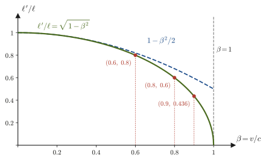
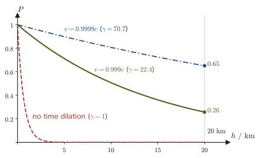

Chapter 55Lorentz Contraction, Time Dilation, and the Transformation of Velocities
The elementary particle called the muon, which rains down on us from space, decays about $2.2\ \mathrm{\mu s}$ after it is born. Even if it traveled at the speed of light, it could cover only $660\ \mathrm{m}$ in that time. Yet muons born at an altitude of $15$–$20\ \mathrm{km}$ actually pass through our bodies on the ground at a rate of many per second. The common sense of high school physics, that “time flows in the same way for everyone, and lengths are the same no matter who measures them,” cannot explain this fact. If we use the Lorentz transformation derived in the previous chapter just as it stands, we reach the conclusion that a moving clock runs slowly and a moving ruler appears shortened in the direction of motion. In this chapter we derive these “relativistic effects” one by one by a simple calculation: substituting the coordinates of specific events into the equations of the Lorentz transformation.
Many readers will have memorized the formula for the Doppler effect of sound in high school physics, $f'=f\,(V-v_{\mathrm{o}})/(V-v_{\mathrm{s}})$ (here $v_{\mathrm{s}},v_{\mathrm{o}}$ are velocities taken as positive in the direction from the sound source to the observer; Section 12.1). Because there is no medium to carry light, the Doppler effect of light cannot use this formula as it stands. In this chapter we combine two effects, the slowing of the light source's clock and the change in the spacing of the wavefronts, to derive the formula for the relativistic Doppler effect of light (redshift). Furthermore, we use the chain rule of differentiation to derive how the sum $v_1+v_2$ that we used in high school as the “composition of velocities” must be rewritten near the speed of light. Finally, as an application close to everyday life, we calculate the correction to the atomic clocks of the GPS satellites, which underpin the location services of car navigation systems and smartphones, as an effect of the special theory of relativity.
- The meaning of measuring a length (the difference between the coordinates of the two ends measured at the same time), and the length contraction $\ell'=\ell\sqrt{1-(v/c)^2}$ that follows from the Lorentz transformation
- Derivation of time dilation $\Delta t=\gamma\,\Delta\tau$ by two methods, the light clock and the Lorentz transformation, and the concept of proper time
- The extension of the muon's lifetime, and the contraction of the atmosphere when the same phenomenon is viewed from the muon's standpoint (the agreement of the two viewpoints)
- Derivation of the relativistic Doppler effect of light $\nu'=\sqrt{(c-v)/(c+v)}\,\nu$, and redshift and blueshift
- The problem of viewing a rocket's clock through a telescope (including the time for the light to arrive)
- Derivation of the Lorentz velocity transformation $u'_x=(u_x-v)/(1-vu_x/c^2)$, $u'_y=u_y/[\gamma(1-vu_x/c^2)]$, and the fact that the composed speed does not exceed $c$
- Correction of the clocks of GPS satellites (special relativity makes them lose about $7\ \mathrm{\mu s}$ per day, general relativity makes them gain about $45\ \mathrm{\mu s}$, and the net result is a gain of about $38\ \mathrm{\mu s}$)
Source notes: Yasuhide Mochizuki, Physics Notes: Special Relativity, pp. 4–10.
55.1 Lorentz Contraction — The Length of a Moving Rod
In high school physics, the length of an object was something we read off by laying a ruler against it. If a rod is not moving, anyone who measures it gets the same value. But the length of a running train cannot be measured so easily, because the train keeps moving even while we are measuring it. The only way to measure the length of a train is to record the positions of its front and its rear at the same time and take the difference. So let us first make clear what it means to “measure a length.”
Definition 55.1: Length measurement and proper length
The distance (length) between two points A and B observed in an inertial frame of reference is the difference between the coordinate of A and the coordinate of B measured at the same time in that inertial frame. If the rod is moving, the positions of its two ends are recorded at the same time in that inertial frame (the same time shown by clocks synchronized in that frame). The length measured in the inertial frame in which the rod is at rest is called the proper length of the rod.
If the rod is at rest, the result is the same whether we measure the two ends at the same time or at different times, so there is no need to be conscious of “simultaneity.” In the Lorentz transformation of the previous chapter, however, the position $x$ was mixed into the equation for the time $t'$ (Section 54.5). As a result, “simultaneous in frame S” and “simultaneous in frame S′” no longer coincide. This is the origin of the length contraction.
55.1.1 Setup
As in the previous chapter, consider an inertial frame S and an inertial frame S′ that moves at speed $v$ in the positive direction of the $x$ axis relative to S. Suppose that a rod (of length $\ell$) at rest in frame S lies along the $x$ axis. Let one end of the rod be A and the other end B, and let their coordinates in frame S be
\begin{equation} x_{\mathrm{A}}=0,\qquad x_{\mathrm{B}}=\ell \label{eq:55-rod-S} \end{equation}(Figure 55.1). Since the rod is at rest in frame S, $x_{\mathrm{A}},x_{\mathrm{B}}$ do not depend on the time $t$. We want to find the length $\ell'$ of this rod as seen from frame S′. All we use is the Lorentz transformation (Theorem 54.1) derived in the previous chapter,
\begin{equation} x'=\frac{x-vt}{\sqrt{1-(v/c)^2}},\qquad t'=\frac{t-\dfrac{v}{c^2}x}{\sqrt{1-(v/c)^2}},\qquad y'=y,\quad z'=z \label{eq:55-lorentz} \end{equation}and nothing else. If we write $\gamma=1/\sqrt{1-(v/c)^2}$, Eq. \eqref{eq:55-lorentz} reads $x'=\gamma(x-vt)$, $t'=\gamma(t-vx/c^2)$.
55.1.2 Transforming the coordinates of ends A and B into frame S′
Derivation: Lorentz contraction
Coordinates of end A. Substitute $x_{\mathrm{A}}=0$ into Eq. \eqref{eq:55-lorentz}. Using the fact that A is the left end of the rod, with $x_{\mathrm{A}}=0$, we obtain
$$ x_{\mathrm{A}}'=\frac{0-vt_{\mathrm{A}}}{\sqrt{1-(v/c)^2}}=-\gamma\,v\,t_{\mathrm{A}},\qquad t_{\mathrm{A}}'=\frac{t_{\mathrm{A}}-0}{\sqrt{1-(v/c)^2}}=\gamma\,t_{\mathrm{A}} $$From the second equation, $t_{\mathrm{A}}=t_{\mathrm{A}}'/\gamma$, so substituting this into the first gives $x_{\mathrm{A}}'=-\gamma v\,(t_{\mathrm{A}}'/\gamma)=-v\,t_{\mathrm{A}}'$, that is,
\begin{equation} x_{\mathrm{A}}'=-v\,t_{\mathrm{A}}' \label{eq:55-xA} \end{equation}This expresses the fact that “seen from frame S′, A moves in the $-x'$ direction at speed $v$” (as it must, since S′ moves in the $+x$ direction relative to S).
Coordinates of end B. Substituting $x_{\mathrm{B}}=\ell$ into Eq. \eqref{eq:55-lorentz}, we obtain
$$ x_{\mathrm{B}}'=\frac{\ell-vt_{\mathrm{B}}}{\sqrt{1-(v/c)^2}}=\gamma\,(\ell-vt_{\mathrm{B}}),\qquad t_{\mathrm{B}}'=\frac{t_{\mathrm{B}}-\dfrac{v}{c^2}\ell}{\sqrt{1-(v/c)^2}}=\gamma\left(t_{\mathrm{B}}-\frac{v}{c^2}\ell\right) $$For end A, the position in frame S′ could be written as a function of the time $t_{\mathrm{A}}'$ in frame S′: $x_{\mathrm{A}}'=-v\,t_{\mathrm{A}}'$. For end B as well, we want to express the position in frame S′ as a function of the time $t_{\mathrm{B}}'$ in frame S′. Then the state of the rod at a given time in frame S′ (Figure 55.1(b)) is obtained simply by listing the coordinates of ends A and B. To do this, we solve the equation for $t_{\mathrm{B}}'$ for $t_{\mathrm{B}}$. Dividing both sides by $\gamma$ and transposing $v\ell/c^2$, we obtain
$$ t_{\mathrm{B}}=\frac{t_{\mathrm{B}}'}{\gamma}+\frac{v}{c^2}\,\ell $$Substituting this into $x_{\mathrm{B}}'=\gamma\,(\ell-vt_{\mathrm{B}})$ eliminates $t_{\mathrm{B}}$, and we obtain
$$ \begin{aligned} x_{\mathrm{B}}'&=\gamma\left[\ell-v\left(\frac{t_{\mathrm{B}}'}{\gamma}+\frac{v}{c^2}\,\ell\right)\right] =\gamma\ell-v\,t_{\mathrm{B}}'-\gamma\frac{v^2}{c^2}\ell\\ &=\gamma\ell\left(1-\frac{v^2}{c^2}\right)-v\,t_{\mathrm{B}}' =\frac{1}{\sqrt{1-(v/c)^2}}\,\ell\left(1-\frac{v^2}{c^2}\right)-v\,t_{\mathrm{B}}' \end{aligned} $$(we used $\gamma\cdot t_{\mathrm{B}}'/\gamma=t_{\mathrm{B}}'$). The last coefficient is $(1-v^2/c^2)/\sqrt{1-v^2/c^2}=\sqrt{1-v^2/c^2}$, so we obtain
\begin{equation} x_{\mathrm{B}}'=\sqrt{1-\left(\frac vc\right)^2}\ \ell-v\,t_{\mathrm{B}}' \label{eq:55-xB} \end{equation}Comparing with the equation for end A, Eq. \eqref{eq:55-xA}, both have the form “$-v\times$ (time in frame S′)” (both ends move in the $-x'$ direction at speed $v$), and the only difference is the constant term.
Finding the distance between A and B. By Definition 55.1, the distance between A and B in frame S′ is the difference between the coordinates of A and B measured at the same time in frame S′. That is, we impose $t_{\mathrm{A}}'=t_{\mathrm{B}}'$ and subtract Eq. \eqref{eq:55-xA} from Eq. \eqref{eq:55-xB}:
$$ \ell'=x_{\mathrm{B}}'-x_{\mathrm{A}}'=\left[\sqrt{1-\left(\frac vc\right)^2}\ \ell-v\,t_{\mathrm{B}}'\right]-\left[-v\,t_{\mathrm{A}}'\right] =\sqrt{1-\left(\frac vc\right)^2}\ \ell-v\,(t_{\mathrm{B}}'-t_{\mathrm{A}}') $$Since $t_{\mathrm{A}}'=t_{\mathrm{B}}'$, the last term vanishes, and
\begin{equation} \ell'=x_{\mathrm{B}}'-x_{\mathrm{A}}'=\sqrt{1-\left(\frac vc\right)^2}\ \ell \label{eq:55-contraction} \end{equation}follows.
∎
Caution: “Simultaneous in S′” and “simultaneous in S” are not the same
In the derivation above, the condition $t_{\mathrm{A}}'=t_{\mathrm{B}}'$ means “simultaneous in frame S′,” which is not the same as “simultaneous in frame S,” that is, $t_{\mathrm{A}}=t_{\mathrm{B}}$. Indeed, substituting the equations $t_{\mathrm{A}}'=\gamma t_{\mathrm{A}}$, $t_{\mathrm{B}}'=\gamma(t_{\mathrm{B}}-v\ell/c^2)$ above into $t_{\mathrm{A}}'=t_{\mathrm{B}}'$ gives $\gamma t_{\mathrm{A}}=\gamma(t_{\mathrm{B}}-v\ell/c^2)$, and hence
$$ t_{\mathrm{B}}-t_{\mathrm{A}}=\frac{v\ell}{c^2}\neq0 $$In other words, when frame S′ records A and B “at the same time,” the record of B is later by $v\ell/c^2$ on the clocks of frame S. If we forgot this and subtracted the coordinates at the same time $t_{\mathrm{A}}=t_{\mathrm{B}}$ in frame S, we would obtain $x_{\mathrm{B}}'-x_{\mathrm{A}}'=\gamma(\ell-vt_{\mathrm{B}})+\gamma vt_{\mathrm{A}}=\gamma\ell$, a value larger than $\ell$. But this is merely the difference between the positions of A and B at different times as seen from frame S′ (the rod keeps moving in the meantime), and it is not the “length of the rod” in frame S′. It is important to return to Definition 55.1, which says that measuring a length means measuring at the same time.
Theorem 55.1: Lorentz contraction (length contraction)
Let $\ell$ be the proper length of a rod at rest in an inertial frame S. The length $\ell'$ of the rod measured from an inertial frame S′ that moves at speed $v$ relative to S along the length of the rod is
\begin{equation} \ell'=\sqrt{1-\left(\frac vc\right)^2}\ \ell=\frac{\ell}{\gamma}\ \ (\le\ell) \label{eq:55-thm-contraction} \end{equation}That is, seen from frame S′, the rod appears contracted in the direction of motion by the factor $\sqrt{1-(v/c)^2}$. The length of a rod is greatest when it is measured in the frame in which the rod is at rest (the proper length).
Intuition: Contraction occurs only along the direction of motion, and it is “mutual”
Since $y'=y$ and $z'=z$ in the Lorentz transformation (Section 54.5.3), only the length in the direction of motion (the $x$ direction) contracts, and lengths perpendicular to the direction of motion do not change. For example, a sphere of radius $R$ in frame S becomes, in frame S′, an oblate spheroid in which only the diameter in the $x'$ direction is contracted by the factor $\sqrt{1-(v/c)^2}$. Also, since S and S′ are on an equal footing by the principle of relativity of the previous chapter, a rod at rest in frame S′ appears contracted by the same factor when viewed from frame S (Example 55.2). It is not that one of the two is “really contracted”: “length” is a relative quantity that follows from the definition that it is a quantity measured at the same time in the given inertial frame.
Caution: “Measured length” and “visible shape” are different things
Theorem 55.1 concerns the length obtained by recording the two ends of a moving object simultaneously. How an object “looks” to the eye or in a photograph is a separate matter: for the light emitted from the various parts of the object to arrive at the camera simultaneously, the farther a part is, the earlier it must emit its light, so the difference in the light travel times comes into play. As a result, Terrell and Penrose showed in 1959 that a sphere moving at nearly the speed of light is not photographed as a flattened ellipsoid but still appears circular (a sphere), while a cube appears distorted, as if rotated. Lorentz contraction is not a phenomenon that is “seen” but one that is “measured” as a difference of coordinates at the same time.
If we plot the contraction ratio $\ell'/\ell=\sqrt{1-\beta^2}$ as a function of $\beta=v/c$, we obtain Figure 55.2. While $\beta$ is small, there is almost no contraction; as $\beta$ approaches 1 the length shrinks rapidly, and as $\beta\to1$ the length approaches 0.

Example 55.1: The length of a structure passing by at 0.9 times the speed of light
A structure whose length at rest relative to the spaceship (proper length) is $100\ \mathrm{m}$ is placed along the direction of travel inside a spaceship flying at $v=0.9c$. To how many $\mathrm{m}$ does this structure appear to shrink, as seen from the ground (frame S)?
Solution. From $\beta=v/c=0.9$ we have $\beta^2=0.81$ and $1-\beta^2=0.19$. By Theorem 55.1 (Eq. \eqref{eq:55-thm-contraction}),
$$ \ell'=\ell\sqrt{1-\beta^2}=100\ \mathrm{m}\times\sqrt{0.19}=100\ \mathrm{m}\times0.4359\approx43.6\ \mathrm{m} $$(With $\gamma=1/\sqrt{0.19}=2.294$, we also get $\ell/\gamma=100/2.294=43.6\ \mathrm{m}$, in agreement.) The length is about $44\ \mathrm{m}$; that is, the structure appears a little shorter than half its proper length. The directions perpendicular to the direction of motion (the width and height of the structure) are unchanged.
Example 55.2: Measuring a rod at rest in frame S′ from frame S (the contraction is “mutual”)
Let $\ell_0$ be the proper length of a rod at rest relative to frame S′. The rod lies along the $x'$ axis of S′, with one end A′ at $x'=0$ and the other end B′ at $x'=\ell_0$. Find the length $\ell$ of this rod in frame S, using the inverse Lorentz transformation $x=\gamma(x'+vt')$, $t=\gamma(t'+vx'/c^2)$ (Section 54.7 of the previous chapter).
Solution. Substituting the coordinate $x_{\mathrm{A}}'=0$ of A′ gives $x_{\mathrm{A}}=\gamma\,v\,t_{\mathrm{A}}'$ and $t_{\mathrm{A}}=\gamma\,t_{\mathrm{A}}'$. Substituting the coordinate $x_{\mathrm{B}}'=\ell_0$ of B′ gives
$$ x_{\mathrm{B}}=\gamma\,(\ell_0+v\,t_{\mathrm{B}}'),\qquad t_{\mathrm{B}}=\gamma\left(t_{\mathrm{B}}'+\frac{v}{c^2}\ell_0\right) $$The length in frame S is the difference of the coordinates measured at the same time in S, $t_{\mathrm{A}}=t_{\mathrm{B}}$. From $\gamma t_{\mathrm{A}}'=\gamma(t_{\mathrm{B}}'+v\ell_0/c^2)$ we get $t_{\mathrm{A}}'-t_{\mathrm{B}}'=v\ell_0/c^2$. Hence
$$ \ell=x_{\mathrm{B}}-x_{\mathrm{A}}=\gamma\,\bigl[\ell_0+v\,(t_{\mathrm{B}}'-t_{\mathrm{A}}')\bigr]=\gamma\left[\ell_0-\frac{v^2}{c^2}\ell_0\right]=\gamma\,\ell_0\,(1-\beta^2)=\frac{\ell_0}{\gamma}=\sqrt{1-\left(\frac vc\right)^2}\ \ell_0 $$(in the last step we used $\gamma(1-\beta^2)=1/\gamma$). Therefore, even when viewed from frame S, the rod at rest in S′ appears shrunk by the same ratio, to $\sqrt{1-(v/c)^2}$ times its length. The result has exactly the same form as when a rod at rest in S is viewed from S′ (Eq. \eqref{eq:55-contraction}).
Example 55.3: How much is the length of a Shinkansen train contracted?
When a person on the ground observes a Shinkansen (bullet train) of total length $400\ \mathrm{m}$ (proper length) running at $300\ \mathrm{km}$ per hour, by how many $\mathrm{m}$ is it shortened by Lorentz contraction? Take $c=2.998\times10^8\ \mathrm{m/s}$, and compare the result with the size of an atom (about $10^{-10}\ \mathrm{m}$).
Solution. We have $v=300\ \mathrm{km/h}=300\times10^3/3600=83.3\ \mathrm{m/s}$, so $\beta=83.3/(2.998\times10^8)=2.78\times10^{-7}$. Since this value is much smaller than 1, we approximate $\gamma^{-1}=\sqrt{1-\beta^2}$ using $\sqrt{1-x}\approx1-x/2$ from the Taylor expansion (University Mathematics, Section 4.2). Since $\beta^2=7.72\times10^{-14}$,
$$ \ell'=\ell\sqrt{1-\beta^2}\approx\ell\left(1-\frac{\beta^2}{2}\right),\qquad \ell-\ell'\approx\ell\,\frac{\beta^2}{2}=400\ \mathrm{m}\times\frac{7.72\times10^{-14}}{2}=1.5\times10^{-11}\ \mathrm{m} $$The contraction is about $0.015\ \mathrm{nm}$ ($15\ \mathrm{pm}$), only about $1/7$ of the size of a single atom. We do not notice Lorentz contraction at everyday speeds because $\beta$ is extremely small and the contraction is proportional to $\beta^2$.
55.2 The Slowing of Clocks — Proper Time and Time Dilation
In the previous section we derived the contraction of lengths from the “$x'$ equation” of the Lorentz transformation. Now let us derive from the “$t'$ equation” that the rate at which time passes differs from one coordinate system to another. A clock is a device that measures time by counting a periodic phenomenon, such as the swing of a pendulum, the vibration of a quartz crystal, or the oscillation of light from cesium atoms. Therefore, investigating “how a moving clock runs” is nothing other than investigating “the period of a periodic phenomenon in a moving frame.”
Definition 55.2: Proper time
In an inertial frame in which a clock is at rest (as seen from the clock, the clock is at the same place), the time interval $\Delta\tau$ measured by the clock itself is called the proper time of that clock. For two events that occur at the same place (for example, two “ticks” of a clock), the time interval measured in the coordinate system in which they occur at the same place is the proper time.
This corresponds to the way the “proper length” (Definition 55.1) was the length in the frame in which the object is at rest. The conclusion about time is that “the proper time is the shortest.” Below we derive this in two ways. The first uses a thought experiment with a light clock and derives the result without using the Lorentz transformation equations themselves (we use only the principle of the constancy of the speed of light, the Pythagorean theorem, and the fact that lengths perpendicular to the direction of motion do not change (the “Why?” box in Section 54.5.3)). The second uses the Lorentz transformation equations directly.
55.2.1 Derivation using a light clock
A light clock is a hypothetical clock in which light is bounced back and forth between two mirrors separated by a distance $d$, and one “tick” is counted for each round trip. In the coordinate system in which this clock is at rest (call it frame S), light travels between the mirrors at speed $c$, so the time for one round trip, that is, the proper-time interval, is
\begin{equation} \Delta\tau=\frac{2d}{c} \label{eq:55-lc-rest} \end{equation}This is shown in Figure 55.3(a). For example, if $d=0.15\ \mathrm{m}$, then $\Delta\tau=2\times0.15/(3.0\times10^{8})=1.0\times10^{-9}\ \mathrm{s}=1\ \mathrm{ns}$.
We observe this clock from a coordinate system S′ that moves at speed $v$ in the $+x$ direction relative to S. As seen from S′, the clock appears to move at speed $v$ in the $-x'$ direction (to the left in the figure). Suppose the mirrors are placed perpendicular to the direction of motion (so the mirror separation $d$ is the same $d$ in S′ as well, by $y'=y$ from the previous chapter). Let $T$ be the time for one round trip of the light measured by the clocks of S′. During this time the light clock moves a distance $vT$ in S′ (Figure 55.3(b)). From leaving the lower mirror to reaching the upper mirror (time $T/2$), the light moves horizontally (in the $-x'$ direction) by $vT/2$ along with the clock, while traveling vertically a distance $d$. The speed of light is the same $c$ in S′ as well (the principle of the constancy of the speed of light, Law 54.3), so the distance traveled along the slant is $c\cdot T/2$. Applying the Pythagorean theorem to the right triangle in the figure, we obtain
\begin{equation} \left(\frac{cT}{2}\right)^2=d^2+\left(\frac{vT}{2}\right)^2 \label{eq:55-lc-pyth} \end{equation}Let us solve this for $T$. Moving $(vT/2)^2$ on the right-hand side to the left and rearranging, we get
$$ \frac{c^2T^2}{4}-\frac{v^2T^2}{4}=d^2 \qquad\Longrightarrow\qquad \frac{T^2}{4}\,(c^2-v^2)=d^2 \qquad\Longrightarrow\qquad T=\frac{2d}{\sqrt{c^2-v^2}} $$Factoring $c$ out of the denominator and writing $\sqrt{c^2-v^2}=c\sqrt{1-v^2/c^2}$, and using Eq. \eqref{eq:55-lc-rest}, we have
\begin{equation} T=\frac{2d}{c}\cdot\frac{1}{\sqrt{1-(v/c)^2}}=\frac{\Delta\tau}{\sqrt{1-(v/c)^2}}=\gamma\,\Delta\tau \label{eq:55-lc-result} \end{equation}Since $\gamma\ge1$, one round trip of the clock that appears to be moving is longer, by a factor of $\gamma$, than one round trip of the clock at rest. That is, a moving clock runs slow. All we used here are the principle of the constancy of the speed of light and the Pythagorean theorem (together with the fact that the mirror separation $d$ is unchanged in S′); note that time dilation emerged from the principle that the speed at which light travels does not depend on the observer.
Intuition: Light runs along a “longer slanted path” at the same speed
The light inside the light clock that appears to be moving has to travel a longer path, by the amount it goes obliquely, than the straight up-and-down path it travels when the clock is at rest. But since the speed of light does not change, the longer the path, the longer the round trip takes. This is the intuitive reason for time dilation. For a ball thrown inside a moving train, the speed of the ball as seen from the ground is larger by the speed of the train, so the time does not have to change even though the path is longer. But since the speed of light is constant regardless of the observer, the extra path length is compensated instead by the stretching of time.
55.2.2 Derivation using the Lorentz transformation
Let us derive the same result from the Lorentz transformation. Consider a clock placed at the origin $x=0$ of frame S. This clock is at rest relative to S, and suppose it ticks twice in S (at times $t_1$ and $t_2$, both at position $x=0$). The interval $\Delta t=t_2-t_1$ measured in S is the proper time $\Delta\tau$ of this clock.
Derivation: A moving clock runs slow
The times of the two events in S′ are obtained by substituting $x=0$ into the $t'$ equation of the Lorentz transformation (Eq. \eqref{eq:55-lorentz}):
$$ t_1'=\frac{t_1-\dfrac{v}{c^2}\cdot0}{\sqrt{1-(v/c)^2}}=\frac{t_1}{\sqrt{1-(v/c)^2}},\qquad t_2'=\frac{t_2}{\sqrt{1-(v/c)^2}} $$(The key point is that substituting $x=0$ eliminated the term proportional to $x$.) Therefore, the time interval between the two events measured in S′ is
\begin{equation} \Delta t'=t_2'-t_1'=\frac{t_2-t_1}{\sqrt{1-(v/c)^2}}=\frac{\Delta t}{\sqrt{1-(v/c)^2}}=\gamma\,\Delta t \label{eq:55-td-derivation} \end{equation}Since $\Delta t$ is the proper time $\Delta\tau$ in S, we have $\Delta t'=\gamma\,\Delta\tau$. This agrees with Eq. \eqref{eq:55-lc-result} obtained from the light clock.
∎
Theorem 55.2: Time dilation
Let $\Delta\tau$ be the time interval (proper time) measured by a clock in the inertial frame in which the clock is at rest. The time interval $\Delta t$ between the same two events, measured in an inertial frame moving at speed $v$ relative to this clock, is
\begin{equation} \Delta t=\frac{\Delta\tau}{\sqrt{1-(v/c)^2}}=\gamma\,\Delta\tau\ \ (\ge\Delta\tau) \label{eq:55-thm-dilation} \end{equation}That is, a moving clock runs at only $\sqrt{1-(v/c)^2}$ times the rate of a clock at rest.
Discussion: Why can each observer say that the other's clock is running slow?
For a clock at rest in S′, using the inverse Lorentz transformation $t=\gamma(t'+vx'/c^2)$ in the same way (with the clock at $x'=0$ in S′), the interval measured in S becomes $\Delta t=\gamma\,\Delta t'$. That is, from S the clock of S′ runs slow, and from S′ the clock of S runs slow. Since S and S′ are on an equal footing by the principle of relativity, this is only natural, but at first glance it looks contradictory. There is no contradiction because the “two ticks of a moving clock” are events occurring at different places, and to measure their time interval in the other frame we need two clocks placed at different places (and synchronized within that frame). As we saw in the previous section, the clocks at two places that look simultaneous in S do not look simultaneous in S′. Thus each observer is comparing one's own clock with the pair of clocks used to measure the other frame, and the conclusion that each sees the other as running slow holds without contradiction. Example 55.7 checks this with concrete numbers. The relativity of simultaneity and spacetime diagrams are examined in detail in Chapter 56.
Caution: $\Delta t=\gamma\Delta\tau$ holds only for “two events occurring at the same place”
In deriving Eq. \eqref{eq:55-thm-dilation}, we assumed that the two events occur at the same place ($x=0$) in S. In general, if the time difference between two events in S is $\Delta t$ and the position difference is $\Delta x$, then the Lorentz transformation (Eq. \eqref{eq:55-lorentz}) gives the time difference in S′ as
$$ \Delta t'=\gamma\left(\Delta t-\frac{v}{c^2}\Delta x\right) $$Only when $\Delta x=0$ do we get $\Delta t'=\gamma\Delta t$. When using the formula “a moving clock runs slow by a factor of $\gamma$,” always check whether the two events occur at the same place in the frame in which the clock is at rest (that is, whether the time interval is the proper time).
Application: Time dilation has been confirmed by experiments
Time dilation has been confirmed in many experiments. As we shall see in the next section, cosmic-ray muons reach the ground because of time dilation. In an experiment at CERN in 1977 (the muon storage ring), the lifetime was measured for muons confined in a circular orbit in a magnetic field and moving with Lorentz factor $\gamma\approx29.3$; it was confirmed, to a precision of about $0.1\%$, to be extended to $\gamma$ times the lifetime of muons at rest (about $64\ \mathrm{\mu s}$). Furthermore, using precision optical clocks in which laser light is applied to ions, it was shown in 2010 that one can detect the slowing of a clock even for slow motion at a speed of about $10\ \mathrm{m}$ per second (about $36\ \mathrm{km}$ per hour) or less, and even the gravitational effect that arises from a height difference of only $33\ \mathrm{cm}$. In addition, in satellite positioning systems (GPS) used in car navigation and the like, a correction for time dilation is actually built into the daily determination of position (Section 55.7).
Example 55.4: One hour aboard a spaceship flying at 0.99c
While one hour ($3600\ \mathrm{s}$) elapses on the ground, how many minutes does the clock of a person aboard a spaceship flying at $v=0.99c$ advance?
Solution. One hour on the ground is a time interval $\Delta t=3600\ \mathrm{s}$ measured by clocks on the ground. The spaceship's clock measures events that occur at the same place inside the spaceship, so the time $\Delta\tau$ ticked off by the spaceship's clock is the proper time. By Theorem 55.2, $\Delta t=\gamma\Delta\tau$, that is, $\Delta\tau=\Delta t/\gamma=\Delta t\sqrt{1-\beta^2}$. For $\beta=0.99$ we have $\beta^2=0.9801$, $1-\beta^2=0.0199$, and $\sqrt{0.0199}=0.14107$ ($\gamma=7.0888$), so
$$ \Delta\tau=3600\ \mathrm{s}\times0.14107=507.8\ \mathrm{s}\approx8.46\ \mathrm{min} $$Thus, during one hour on the ground, the clock on the spaceship advances only about $8.5$ minutes.
Example 55.5: The period of a light clock
A light clock has a mirror separation of $d=0.15\ \mathrm{m}$. (a) Find the period (the proper time) $\Delta\tau$ when the clock is at rest. (b) When this clock is seen moving at $v=0.6c$ in the direction parallel to the mirror surfaces, find the period $T$ and the distance $cT$ traveled by the light during that time. Take $c=3.00\times10^8\ \mathrm{m/s}$.
Solution. (a) $\Delta\tau=2d/c=2\times0.15\ \mathrm m/(3.00\times10^8\ \mathrm{m/s})=1.00\times10^{-9}\ \mathrm{s}=1.00\ \mathrm{ns}$. (b) For $\beta=0.6$ we have $\gamma=1/\sqrt{1-0.36}=1/0.8=1.25$, so by Eq. \eqref{eq:55-lc-result}, $T=\gamma\,\Delta\tau=1.25\ \mathrm{ns}$. The distance traveled by the light is $cT=3.00\times10^8\times1.25\times10^{-9}=0.375\ \mathrm m$, which is longer than the round-trip distance at rest, $2d=0.30\ \mathrm m$. As a check using Eq. \eqref{eq:55-lc-pyth}: the one-way distance is $cT/2=0.1875\ \mathrm m$, the displacement of the clock is $vT/2=0.6\times0.1875=0.1125\ \mathrm m$, and the perpendicular distance is $d=0.15\ \mathrm m$. Then $0.15^2+0.1125^2=0.0225+0.012656=0.035156$ and $0.1875^2=0.035156$, so the Pythagorean theorem is satisfied.
Example 55.6: Checking that length contraction and time dilation are compatible
A spaceship of proper length $\ell_0=100\ \mathrm m$ passes an observation point P (fixed on the ground) at speed $v=0.6c$. How much time, in $\mathrm{s}$, elapses between the moment the front of the spaceship passes P and the moment its rear passes P, as measured (a) by a clock on the ground and (b) by a clock on the spaceship? (c) Verify that (a) and (b) satisfy the time dilation formula (Theorem 55.2). Take $c=3.00\times10^8\ \mathrm{m/s}$.
Solution. We have $\gamma=1.25$. (a) Seen from the ground, the length of the spaceship is Lorentz-contracted to $\ell=\ell_0/\gamma=100/1.25=80\ \mathrm m$. Since the spaceship, with this length, passes the observation point P at speed $v=0.6c=1.80\times10^8\ \mathrm{m/s}$, the time required for the passage is
$$ \Delta t_{\mathrm{G}}=\frac{\ell}{v}=\frac{80\ \mathrm m}{1.80\times10^8\ \mathrm{m/s}}=4.44\times10^{-7}\ \mathrm s $$(b) Seen from the spaceship, the spaceship of length $\ell_0=100\ \mathrm m$ is at rest, and the observation point P passes by at speed $v$. The distance from the front to the rear is $100\ \mathrm m$, so
$$ \Delta t_{\mathrm{S}}=\frac{\ell_0}{v}=\frac{100\ \mathrm m}{1.80\times10^8\ \mathrm{m/s}}=5.56\times10^{-7}\ \mathrm s $$(c) The two events “the front passes P” and “the rear passes P” occur at the same place (P) on the ground, so $\Delta t_{\mathrm{G}}$, measured by the ground clock (a single clock placed at P), is the proper time. By Theorem 55.2, the time interval seen from the spaceship is $\Delta t_{\mathrm{S}}=\gamma\,\Delta t_{\mathrm{G}}=1.25\times4.44\times10^{-7}=5.56\times10^{-7}\ \mathrm s$, which agrees with the value in (b). Length contraction (the previous section) and time dilation are not separate phenomena: they are two manifestations of a single theory, both following from the same Lorentz transformation, and they do not contradict each other.
Example 55.7: A numerical check of “each sees the other's clock running slow”
Two clocks synchronized in frame S, C1 ($x=0$) and C2 ($x=L=180\ \mathrm m$), are placed in frame S. A clock K is at the origin of frame S′ and moves relative to S in the $+x$ direction at $v=0.6c$ ($\gamma=1.25$). At the instant K passes C1, K and C1 both read $0$. (a) From the standpoint of frame S, find the readings of C2 and K at the instant K comes alongside C2, and verify the statement “K is running slow.” (b) From the standpoint of frame S′, find the value shown by C2 at the instant K is alongside C1 ($t'=0$). (c) From the standpoint of frame S′, find by how much the reading of K and the reading of C2 each advance until K comes alongside C2, and verify the statement “the clocks of frame S are running slow.” Take $c=3.00\times10^{8}\ \mathrm{m/s}$.
Solution. We have $v=0.6c=1.80\times10^{8}\ \mathrm{m/s}$ and $L/c=180/(3.00\times10^{8})=0.600\ \mathrm{\mu s}$.
(a) In frame S, the time K takes to travel the distance $L$ from C1 to C2 is $t=L/v=180\ \mathrm m/(1.80\times10^{8}\ \mathrm{m/s})=1.00\ \mathrm{\mu s}$. Since C1 and C2 are synchronized in S, C2 reads $1.00\ \mathrm{\mu s}$ at the instant K comes alongside C2. On the other hand, K is a moving clock, so during an interval of $1.00\ \mathrm{\mu s}$ in frame S the proper time of K advances only $1.00/\gamma=1.00/1.25=0.800\ \mathrm{\mu s}$, and K reads $0.800\ \mathrm{\mu s}$. Since C2 reads $1.00\ \mathrm{\mu s}$ and K reads $0.800\ \mathrm{\mu s}$, K is running slow as seen from frame S.
(b) The event of K coming alongside C1 occurs at $t'=0$ in frame S′. The value $t_{\mathrm{C2}}$ shown by C2 at that same time $t'=0$ of frame S′ is the time $t$ of frame S for which $t'=\gamma\,(t-vL/c^2)=0$ at the position of C2, $x=L$. Hence
$$ t_{\mathrm{C2}}=\frac{v}{c^2}L=\beta\,\frac{L}{c}=0.6\times0.600\ \mathrm{\mu s}=0.360\ \mathrm{\mu s} $$Seen from frame S′, at $t'=0$ C1 reads $0$ and C2 reads $0.360\ \mathrm{\mu s}$. Two clocks synchronized in S are not synchronized as seen from S′: C2, which is at the rear with respect to the direction in which the clocks of frame S move (the $-x'$ direction), is ahead by $vL/c^2$. (For this position $x'$, putting $t'=0$ and $x'=L/\gamma=144\ \mathrm m$ into the inverse Lorentz transformation $t=\gamma(t'+vx'/c^2)$ also gives $t=1.25\times0.6\times144/(3.00\times10^{8})=0.360\ \mathrm{\mu s}$, in agreement.)
(c) In frame S′, at $t'=0$ the clock C2 is at distance $L/\gamma=180/1.25=144\ \mathrm m$ from K (in S′ the distance between C1 and C2 is contracted), and it approaches K at speed $v$. It comes alongside K at $t'=144\ \mathrm m/(1.80\times10^{8}\ \mathrm{m/s})=0.800\ \mathrm{\mu s}$. Since K is at rest in S′, during this time the reading of K advances from $0$ to $0.800\ \mathrm{\mu s}$ (the same value as in (a)). Since C2 is moving in S′, during an interval of $0.800\ \mathrm{\mu s}$ in frame S′ it advances only $0.800/\gamma=0.640\ \mathrm{\mu s}$, and its reading goes from $0.360\ \mathrm{\mu s}$ to $0.360+0.640=1.000\ \mathrm{\mu s}$. This agrees with the reading of C2 at the instant it comes alongside K, $1.00\ \mathrm{\mu s}$, found in (a). Measured in the time of frame S′, while K advances $0.800\ \mathrm{\mu s}$, C2 advances only $0.640\ \mathrm{\mu s}$, so the clocks of frame S are running slow as seen from frame S′.
The conclusions of (a) and (c) are opposite, yet they do not contradict each other. In (a), the advance of a single clock, K, is measured by two synchronized clocks of frame S, C1 and C2. In (c), the advance of a single clock, C2, is measured by two synchronized clocks of frame S′ (the clock at $x'=144\ \mathrm m$ and K). The pairs of clocks being compared are different, and moreover “the two clocks of the other frame are not synchronized as seen from one's own frame” (the offset of $0.360\ \mathrm{\mu s}$ found in (b)); this is why each observer sees the other's clock running slow.
55.3 Relativistic Effects on the Muon (μ Meson)
A familiar example in which time dilation plays a decisive role is the muon (symbol $\mu$), which rains down on the ground as cosmic rays. The muon is an elementary particle with the same charge as the electron and a mass about $207$ times that of the electron ($105.658\ \mathrm{MeV}/c^2$) (it was once called the “μ meson,” but in the current classification it is regarded not as a meson made of quarks but as a particle of the electron family). When a high-energy particle arriving from space (a cosmic ray, mostly a proton) collides with the nucleus of an atom in the atmosphere at an altitude of $15$–$20\ \mathrm{km}$, many particles are produced, and muons are made through their decay. According to observations, muons rain down on the ground ceaselessly, at a rate of roughly one per minute per $1\ \mathrm{cm}^2$.
However, the muon is an unstable particle: when at rest, it decays into an electron and two neutrinos after an average of $T_\mu=2.197\ \mathrm{\mu s}\approx2.2\times10^{-6}\ \mathrm s$ from its birth (this $T_\mu$ is called the mean lifetime. The fraction surviving until time $t$ is given by $\exp(-t/T_\mu)$. Using the half-life $T_{1/2}$ that you learn in high school, the surviving fraction is $(1/2)^{t/T_{1/2}}=\exp(-t\ln2/T_{1/2})$, so $T_\mu=T_{1/2}/\ln2$, that is, $T_{1/2}=T_\mu\ln2=1.52\ \mathrm{\mu s}$. The mean lifetime is about $1.44$ times the half-life). Even if the muon flew at the speed of light $c$, the distance it could cover during its lifetime would be only this much (taking $c=3.0\times10^8\ \mathrm{m/s}$):
\begin{equation} cT_\mu=3.0\times10^{8}\ \mathrm{m/s}\times2.2\times10^{-6}\ \mathrm s=6.6\times10^{2}\ \mathrm m \label{eq:55-cT} \end{equation}(In the more precise calculations below, we use the more accurate values $c=2.998\times10^{8}\ \mathrm{m/s}$ and $T_\mu=2.197\ \mathrm{\mu s}$, and take $cT_\mu=658.7\ \mathrm m$.) That is, if we ignore the relativistic effect (time dilation), almost all the muons born at an altitude of $20\ \mathrm{km}$ should decay before reaching the ground (the surviving fraction is $\exp(-20000/658.7)\approx6.5\times10^{-14}$, which is effectively zero). Nevertheless, why are muons observed on the ground? Let us calculate this using the Lorentz transformation.
55.3.1 The muon's lifetime and flight distance as seen from the ground
Illustration 55.1: Lifetime and flight distance when the muon's speed is $v=0.999c$
Taking the muon's speed to be $v=0.999\,c$, compute the muon's lifetime $T_\mu'$ as seen from the ground and the distance $L$ it travels during that time. (Take the mean lifetime of a muon at rest to be $T_\mu=2.197\times10^{-6}\ \mathrm s$.)
Setting up the coordinate systems. Let S be the coordinate system fixed to the ground (the stationary frame), and let S′ be the coordinate system that moves together with the muon in the $+x$ direction with speed $v$ (Figure 55.4). The muon is at rest at the origin of S′. In both frames, we take the event of the muon's birth to be at the origin and at time 0, and we take the event of its decay to be at the time $t'=T_\mu$ in S′. Since the muon does not move in S′, $x'=0$ at every time.
Solution. Since we want the coordinates as seen from S, we use the inverse Lorentz transformation from S′ to S (Section 54.7 of the previous chapter, with $v\to-v$):
\begin{equation} x=\frac{x'+vt'}{\sqrt{1-(v/c)^2}},\qquad t=\frac{t'+\dfrac{vx'}{c^2}}{\sqrt{1-(v/c)^2}} \label{eq:55-muon-inv} \end{equation}First, substituting the event of birth ($x'=0$, $t'=0$), we obtain
$$ x(0)=\frac{x'(0)+0}{\sqrt{1-(v/c)^2}}=\frac{0+0}{\sqrt{1-(v/c)^2}}=0,\qquad t(0)=\frac{0+\dfrac{v}{c^2}x'(0)}{\sqrt{1-(v/c)^2}}=\frac{0+0}{\sqrt{1-(v/c)^2}}=0 $$so that the event is again at the origin and at time 0 in S (consistent with the condition we arranged at the start). Next, we substitute the event of decay ($x'=0$, $t'=T_\mu$). Since the muon does not move in S′, $x'(T_\mu)=0$:
$$ x(T_\mu)=\frac{0+vT_\mu}{\sqrt{1-(v/c)^2}}=\frac{0.999\,c\,T_\mu}{\sqrt{1-(0.999)^2}},\qquad t(T_\mu)=\frac{T_\mu+\dfrac{v}{c^2}\cdot0}{\sqrt{1-(v/c)^2}}=\frac{T_\mu}{\sqrt{1-(0.999)^2}} $$Here $\sqrt{1-(0.999)^2}=\sqrt{1-0.998001}=\sqrt{0.001999}=0.044710$ ($\gamma=22.366$). Therefore the muon's lifetime as seen from the ground is the time $t(T_\mu)$ in S, and it works out to
$$ T_\mu'=t(T_\mu)=\gamma\,T_\mu=22.366\times2.197\times10^{-6}\ \mathrm s=4.91\times10^{-5}\ \mathrm s $$(Rounding to $T_\mu=2.2\times10^{-6}\ \mathrm s$ gives $4.92\times10^{-5}\ \mathrm s$.) The distance $L$ traveled during that time is the decay position $x(T_\mu)$ in S, so that
$$ L=x(T_\mu)=\gamma\,vT_\mu=0.999\times(2.998\times10^{8}\ \mathrm{m/s})\times4.91\times10^{-5}\ \mathrm s=1.47\times10^{4}\ \mathrm m=14.7\ \mathrm{km} $$This is about $22$ times the distance $cT_\mu=6.6\times10^{2}\ \mathrm m$ obtained by ignoring relativity. As a check, it is the same value as $L=v\,T_\mu'$ (seen from S, the muon travels straight ahead at speed $v$ for the time $T_\mu'$).
This average flight distance of $14.7\ \mathrm{km}$ is about the same size as the altitude of $15$–$20\ \mathrm{km}$ at which muons are born, so a considerable fraction of them reach the ground (if relativity were ignored, they could fly only $660\ \mathrm m$, and almost none would arrive). The fraction that actually arrives is calculated in Example 55.8.
Caution: Do not mix up the coordinate $x'$ in S′
In this problem the muon is at rest at the origin of S′, so its coordinate in S′ is $x'=0$ not only at the moment of birth but also at the moment of decay. Because the muon is flying (in S) at a speed close to the speed of light, you might feel that a “distance of order $cT_\mu$” should enter the $x'$ of the decay position, but in S′ the muon does not move at all. What goes into the inverse Lorentz transformation, Eq. \eqref{eq:55-muon-inv}, is only the coordinates $(x',t')$ of the two events in S′, not the flight distance seen from S. If you put the flight distance into the $x'$ of S′, the same distance is counted twice, and the answer deviates greatly from the true value.
Discussion: What is happening from the muon's point of view?
Let us look at the same phenomenon from the coordinate system S′ that moves together with the muon. In S′ the muon is at rest, and its lifetime remains $T_\mu=2.197\ \mathrm{\mu s}$. Instead, the atmosphere and the ground rush toward the muon at speed $v=0.999c$. Then the atmosphere, which has a thickness of $20\ \mathrm{km}$ in S, undergoes Lorentz contraction in the direction of motion (Theorem 55.1) and appears to shrink to a thickness of
$$ 20\ \mathrm{km}\times\sqrt{1-(0.999)^2}=\frac{20\ \mathrm{km}}{22.37}=0.894\ \mathrm{km}=894\ \mathrm m $$The time for the ground to reach the muon is, in S′,
$$ \frac{894\ \mathrm m}{0.999\times2.998\times10^{8}\ \mathrm{m/s}}=2.99\times10^{-6}\ \mathrm s=2.99\ \mathrm{\mu s} $$This is comparable to the lifetime $T_\mu=2.197\ \mathrm{\mu s}$, so it is quite possible for the muon to reach the ground without decaying. Thus, the “time dilation (the lifetime is extended by a factor of $\gamma$)” seen from the ground and the “length contraction (the atmosphere shrinks by a factor of $1/\gamma$)” seen from the muon are two explanations of the same phenomenon, and whichever viewpoint we calculate from, the fraction of muons reaching the ground has the same value (Example 55.8).
Example 55.8: Fraction of muons reaching the ground (agreement of the two viewpoints)
A muon born at an altitude of $h=20\ \mathrm{km}$ descends straight toward the ground at a speed of (i) $v=0.999c$ or (ii) $v=0.9999c$. Find the fraction that reaches the ground without decaying. Also, for (i), verify that the calculation from the muon's point of view (contraction of the atmosphere) gives the same fraction. Take $T_\mu=2.197\ \mathrm{\mu s}$ and $c=2.998\times10^8\ \mathrm{m/s}$.
Solution. The fraction surviving until time $t$ is $\exp(-t/T_\mu)$ (the definition of the mean lifetime). Seen from the ground, the muon's clock runs slower by a factor of $\gamma$, so during the time $t$ of the ground frame, the proper time $t/\gamma$ elapses. Since the time the descent takes in the ground frame is $t=h/v$, the surviving fraction is
$$ P=\exp\left(-\frac{t/\gamma}{T_\mu}\right)=\exp\left(-\frac{h}{\gamma v\,T_\mu}\right) $$(i) With $\gamma=22.366$ and $\gamma vT_\mu=22.366\times0.999\times2.998\times10^{8}\times2.197\times10^{-6}=1.472\times10^{4}\ \mathrm m$, we get $P=\exp(-20000/14717)=\exp(-1.359)=0.257$, that is, about $26\%$ (the right end of the green solid line in Figure 55.5). (ii) With $\gamma=1/\sqrt{1-0.9999^2}=70.71$ and $\gamma vT_\mu=4.657\times10^{4}\ \mathrm m$, we get $P=\exp(-20000/46570)=\exp(-0.429)=0.651$, about $65\%$. Incidentally, if relativity is ignored, $P=\exp(-20000/658.7)=6.5\times10^{-14}$.
Next, we calculate (i) from the muon's point of view. The thickness of the atmosphere shrinks to $h/\gamma=894\ \mathrm m$, and the time for the descent (the proper time) is $\tau=894\ \mathrm m/v=2.985\times10^{-6}\ \mathrm s$, so $P=\exp(-\tau/T_\mu)=\exp(-2.985/2.197)=\exp(-1.359)=0.257$, which agrees with the result seen from the ground.

Example 55.9: The Lorentz factor needed for survival
A muon is born at an altitude of $h=15\ \mathrm{km}$ and descends straight down at nearly the speed of light, $v\approx c$. How large must $\gamma$ be, at least, for half ($50\%$) or more of such muons to reach the ground? Take $T_\mu=2.197\ \mathrm{\mu s}$ and $c=2.998\times10^8\ \mathrm{m/s}$.
Solution. Setting $v\approx c$ in the formula of Example 55.8, we have $P=\exp(-h/(\gamma cT_\mu))\ge\dfrac12$. Taking the natural logarithm of both sides gives $-h/(\gamma cT_\mu)\ge-\ln2$, that is,
$$ \gamma\ge\frac{h}{cT_\mu\ln2}=\frac{1.5\times10^{4}\ \mathrm m}{658.7\ \mathrm m\times0.6931}=32.9 $$(Here $cT_\mu=2.998\times10^{8}\times2.197\times10^{-6}=658.7\ \mathrm m$. Also, $\ln2=0.6931$ is the number that appears in the half-life $T_{1/2}=T_\mu\ln2$. One may read this as saying that half of the muons survive when the proper time of the descent equals the half-life.) We need $\gamma\gtrsim33$. In this case, the total energy of the muon (given by $E=\gamma mc^2$, which we study in Chapter 57) is $105.658\ \mathrm{MeV}\times33\approx3.5\ \mathrm{GeV}$ or more. Many actual cosmic-ray muons have energies of several $\mathrm{GeV}$, which is consistent with $\gamma$ having a value of about this size.
Application: “Seeing through” volcanoes and huge structures with cosmic-ray muons
Compared with other particles, muons have a strong ability to pass through matter, and they penetrate even rock from tens of $\mathrm{m}$ to hundreds of $\mathrm{m}$ thick. The number of muons reaching the ground decreases as the amount of matter they pass through (the integral of the density) increases, so by measuring the number of muons with a detector placed on the far side of a mountain, one can investigate the density distribution inside a volcano (muography). The fact that muons can fly such a long distance to the ground is owed, as we have seen so far, to time dilation. Similar methods are also used in research that examines the interior of pyramids and nuclear reactors without destroying them.
55.4 Redshift — The Relativistic Doppler Effect of Light
The siren of an ambulance sounds high as it approaches and low as it recedes. This is the Doppler effect of sound (high school physics; Section 12.1). Because sound is a wave that propagates through a medium, namely air, there were separate formulas for “the case in which the sound source moves” and “the case in which the observer moves.” For example, the frequency of a sound source receding from a stationary observer is $f'=fV/(V+v_{\mathrm{s}})$ ($V$ is the speed of sound; here $v_{\mathrm{s}},v_{\mathrm{o}}$ are taken to be speeds (positive values), and the formula for the receding case is written), whereas when the observer recedes from the sound source it is $f'=f(V-v_{\mathrm{o}})/V$. Light, however, propagates through a vacuum without any medium. As we saw in the previous chapter, the speed of light is $c$ regardless of the observer, and “the speed relative to a stationary medium” has no meaning. For this reason the Doppler effect of light cannot be treated by separating the source and the observer, as is done for sound; it must be derived in a completely different way, including the effect of time dilation.
55.4.1 The period of the light source and the motion of the source as seen from frame S′
Suppose a light source placed at the origin of an inertial frame of reference S emits light of period $T$ in frame S (Figure 55.6). That is, as seen in frame S, this source emits one crest (wavefront) of the wave every time interval $T$. Let us observe this light from the coordinate system S′, which moves relative to S with speed $v$ in the positive direction of the $x$ axis.
First we examine how the period of the source appears. Since the source is at rest at the origin of frame S, its position in frame S is $x(t)=0$ (at all times $t$). Substituting this into the equation for $t'$ in the Lorentz transformation (Eq. \eqref{eq:55-lorentz}), the term in $x$ vanishes, and we have
\begin{equation} t'=\frac{t-\dfrac{v}{c^2}\cdot0}{\sqrt{1-(v/c)^2}}=\frac{t}{\sqrt{1-(v/c)^2}} \label{eq:55-dop-t} \end{equation}This is precisely the time dilation derived in Section 55.2. If we measure with the clocks of frame S′ the emission of two wavefronts that are separated by time $T$ in frame S, the time interval is the difference of $t'$, and by Eq. \eqref{eq:55-dop-t},
\begin{equation} T'=\frac{T}{\sqrt{1-(v/c)^2}}=\gamma\,T \label{eq:55-dop-Tprime} \end{equation}That is, seen from frame S′, this source emits wavefronts with period $T'=T/\sqrt{1-(v/c)^2}$ (the period is stretched by a factor of $\gamma$). Next we examine the position of the source. Substituting $x(t)=0$ into the equation for $x'$ in the Lorentz transformation and using Eq. \eqref{eq:55-dop-t}, we obtain
\begin{equation} x'=\frac{x(t)-vt}{\sqrt{1-(v/c)^2}}=\frac{-vt}{\sqrt{1-(v/c)^2}}=-v\,\frac{t}{\sqrt{1-(v/c)^2}}=-v\,t' \label{eq:55-dop-x} \end{equation}This means that, seen from frame S′, the light source flies away with velocity $-v$ (speed $v$ in the direction of $-x'$).
55.4.2 Spacing of the wavefronts (wavelength) and frequency
Consider an observer of frame S′ who is far away on the side opposite to the direction in which the source flies away, that is, at $x'\gt 0$. In frame S′ the source moves in the direction of $-x'$ with speed $v$, emitting a wavefront every period $T'$ (Figure 55.7). The source recedes from the observer, and the light travels from the source toward the observer in the direction of $+x'$. (Seen from frame S, the observer is running away with speed $v$ in the direction in which the light travels, yet the light catches up at speed $c$ and reaches the observer.)
The wavelength is the distance between two adjacent wavefronts at a given instant. So we focus on the instant at which time $T'$ has passed since the source emitted the first wavefront (at this instant the source emits the second wavefront). (i) The first wavefront travels in the direction of $+x'$ at the speed of light $c$ (the speed is $c$ in frame S′ as well, by the principle of the constancy of the speed of light), so it is at a distance $cT'$ from the position where it started. (ii) In the same time the source moves a distance $vT'$ in the opposite direction, and emits the second wavefront there. Therefore the spacing between the two wavefronts at this instant is
\begin{equation} \lambda'=cT'+vT'=\frac{c+v}{\sqrt{1-(v/c)^2}}\,T \label{eq:55-dop-lambda} \end{equation}(the second equality follows from Eq. \eqref{eq:55-dop-Tprime}). This spacing is the wavelength $\lambda'$ of the light observed in frame S′.
(iii) The observer of frame S′ is at rest, and the wavefronts, lined up with spacing $\lambda'$, pass in front of the observer one after another at speed $c$. The number of wavefronts that pass in one second equals the number $c/\lambda'$ of wavefronts lined up within a length $c$. This is the frequency $\nu'$ measured by the observer, and it is nothing other than the basic relation of waves $c=\nu'\lambda'$ (the $v=f\lambda$ of high school physics; Chapter 11). Since the frequency of the light emitted by the source in frame S is $\nu=1/T$, Eq. \eqref{eq:55-dop-lambda} gives
$$ \nu'=\frac{c}{\lambda'}=\frac{c\sqrt{1-(v/c)^2}}{c+v}\cdot\frac{1}{T}=\frac{c\sqrt{1-(v/c)^2}}{c+v}\,\nu $$We simplify this coefficient. Taking $c$ into the square root, $c\sqrt{1-v^2/c^2}=\sqrt{c^2-v^2}$ (since $c\gt 0$, $c$ was put inside the square root as $c^2$), and using $c^2-v^2=(c-v)(c+v)$, we have
$$ \frac{c\sqrt{1-(v/c)^2}}{c+v}=\frac{\sqrt{c^2-v^2}}{c+v}=\frac{\sqrt{(c-v)(c+v)}}{c+v}=\sqrt{\frac{(c-v)(c+v)}{(c+v)^2}}=\sqrt{\frac{c-v}{c+v}} $$(in the last step, since $c+v\gt 0$, the numerator and the denominator were divided by $c+v$). We therefore obtain the following result.
Theorem 55.3: The relativistic Doppler effect of light
A light source at rest in frame S emits light of frequency $\nu$. When an observer who moves with speed $v$ in the direction in which the light travels, that is, away from the source (let S′ be the coordinate system at rest with this observer), observes the light, its frequency $\nu'$ and wavelength $\lambda'$ are
\begin{equation} \nu'=\sqrt{\frac{c-v}{c+v}}\ \nu=\sqrt{\frac{1-\beta}{1+\beta}}\ \nu,\qquad \lambda'=\sqrt{\frac{c+v}{c-v}}\ \lambda \label{eq:55-doppler} \end{equation}(where $\lambda=c/\nu$). When the source and the observer approach each other, we set $v\to-v$, and
\begin{equation} \nu'=\sqrt{\frac{c+v}{c-v}}\ \nu=\sqrt{\frac{1+\beta}{1-\beta}}\ \nu \label{eq:55-doppler-blue} \end{equation}is obtained.
Definition 55.3: Redshift and blueshift
The phenomenon in which light from a receding source appears to have a lower frequency (a longer wavelength) than its frequency in the coordinate system of the source is called redshift. In visible light, a longer wavelength shifts toward the red side, hence the name. Conversely, the phenomenon in which light from an approaching source appears to have a higher frequency (a shorter wavelength) is called blueshift. Let $\lambda$ be the wavelength in the coordinate system of the source and $\lambda'$ the wavelength measured by the observer; then $z=(\lambda'-\lambda)/\lambda$ is called the redshift parameter ($z\lt 0$ for a blueshift).
Intuition: Two effects multiplied together
The coefficient in Eq. \eqref{eq:55-doppler} can be split into two factors as follows.
$$ \sqrt{\frac{1-\beta}{1+\beta}}=\frac{\sqrt{(1-\beta)(1+\beta)}}{1+\beta}=\frac{1}{1+\beta}\cdot\sqrt{1-\beta^2}=\frac{1}{1+\beta}\cdot\frac{1}{\gamma} $$The first factor $1/(1+\beta)=c/(c+v)$ is the classical Doppler effect (the same idea as for sound), in which “when the source recedes, the spacing of the wavefronts widens as $cT'\to cT'+vT'$,” and the second factor $1/\gamma$ is the relativistic time dilation, in which “the clock (period) of the moving source runs slow, and the period becomes $\gamma$ times longer.” For sound and water waves the second factor does not appear. Also, since light has no medium, the case in which “the source moves” and the case in which “the observer moves” cannot be distinguished, and only the relative velocity $v$ of the two frames matters. This is a manifestation of the principle of relativity (Law 54.2).
Figure 55.8 plots $\nu'/\nu$ as a function of $\beta$.
![A graph with β=v/c (positive for the receding direction) on the horizontal axis and the frequency ratio ν′/ν on the vertical axis. The green solid line is the relativistic Doppler effect √((1−β)/(1+β)); it is less than 1 for positive β, greater than 1 for negative β, and diverges toward β=−1. The blue dashed line is the classical formula 1/(1+β) for a moving sound source, and the amber dotted line is 1−β for a moving observer. The three nearly coincide near the origin and separate at large β. The red dot is 0.905 at β=0.1](figs/ch55_fig55-8.svg)
Illustration 55.2: When the light of rubidium atoms recedes
Rubidium atoms emit light of wavelength $\lambda_0=7.947\times10^{-7}\ \mathrm m$. When this light recedes from a stationary observer at a speed of $1/10$ of the speed of light, what wavelength $\lambda$ does the light have as seen by the observer?
Solution. The wavelength in the coordinate system of the source is $\lambda_0$, and the receding speed is $v=c/10$ ($\beta=0.1$). From the second equation of Eq. \eqref{eq:55-doppler}, the wavelength measured by the observer is
$$ \lambda=\sqrt{\frac{c+v}{c-v}}\ \lambda_0=\sqrt{\frac{1+0.1}{1-0.1}}\ \lambda_0=\sqrt{\frac{1.1}{0.9}}\ \lambda_0=\sqrt{1.2222}\ \lambda_0=1.1055\,\lambda_0 $$Therefore,
$$ \lambda=1.1055\times7.947\times10^{-7}\ \mathrm m=8.786\times10^{-7}\ \mathrm m\approx879\ \mathrm{nm} $$Light of $795\ \mathrm{nm}$ (near infrared) in the coordinate system of the source appears as light of $879\ \mathrm{nm}$, a wavelength about $10.6\%$ longer. The redshift parameter is $z=(\lambda-\lambda_0)/\lambda_0=0.1055$. In terms of frequency, $\nu_0=c/\lambda_0=3.77\times10^{14}\ \mathrm{Hz}$ drops to $\nu=\sqrt{0.9/1.1}\,\nu_0=0.9045\,\nu_0=3.41\times10^{14}\ \mathrm{Hz}$.
Example 55.10: Finding the receding speed from the redshift parameter
The wavelength of a spectral line of the light emitted by a certain galaxy is observed stretched to $1.10$ times the value measured in a laboratory on the ground ($z=0.10$). At what multiple of the speed of light is this galaxy receding from Earth? Compare with the value obtained from the classical Doppler formula $\lambda'=\lambda(1+\beta)$.
Solution. From Eq. \eqref{eq:55-doppler}, $\lambda'/\lambda=1+z=\sqrt{(1+\beta)/(1-\beta)}$. Squaring both sides gives $(1+z)^2=(1+\beta)/(1-\beta)$. Clearing the denominator and solving for $\beta$:
$$ (1+z)^2(1-\beta)=1+\beta\ \Longrightarrow\ (1+z)^2-1=\beta\,\bigl[1+(1+z)^2\bigr]\ \Longrightarrow\ \beta=\frac{(1+z)^2-1}{(1+z)^2+1} $$Substituting $z=0.10$, we get $\beta=(1.21-1)/(1.21+1)=0.21/2.21=0.0950$. That is, the galaxy is receding at about $9.5\%$ of the speed of light ($2.85\times10^{4}\ \mathrm{km/s}$). The classical formula $z=\beta$ gives $\beta=0.10$, so there is a difference of about $5\%$. Note that the redshift of very distant galaxies is due mainly not to the speed at which a galaxy moves through space, but to the stretching of the wavelength of light by the expansion of cosmic space itself (cosmological redshift), so for large $z$ this formula cannot be read directly as a “velocity.”
Discussion: The case in which the direction in which the light travels is perpendicular to the motion of the source (transverse Doppler effect)
In the Doppler effect of sound, when the direction of motion of the sound source is perpendicular to the direction in which the sound travels (relative to the air that carries the sound), the frequency does not change. For light, however, regardless of the direction of motion of the source, the factor $1/\gamma$ due to time dilation alone remains. For example, in the coordinate system of the observer, when the direction in which the light travels is perpendicular to the direction of motion of the source, the observed frequency is $\nu'=\nu/\gamma\approx\nu\,(1-\beta^2/2)$, which is smaller at second order in $\beta$ (the transverse Doppler effect). This second-order effect was confirmed in 1938 by Ives and Stilwell, who precisely measured the wavelengths of the light emitted forward and backward by fast-moving hydrogen ions (canal rays).
Application: Mössbauer spectroscopy — Shifting the frequency of γ rays with speeds of a few mm/s
The phenomenon in which a $14.4\ \mathrm{keV}$ $\gamma$ ray emitted by the nucleus of the iron isotope $^{57}\mathrm{Fe}$ is absorbed without recoil by the same kind of nucleus in a solid (the Mössbauer effect) is used for the state analysis of iron-containing materials (steel, oxide ceramics, magnetic materials, iron catalysts, battery materials, and so on). Since the width of the absorption line is very narrow, about $5\ \mathrm{neV}$, merely moving the source at a speed of a few $\mathrm{mm/s}$ makes the energy shift $E\,\beta$ due to the Doppler effect exceed the line width, so that the absorption can be investigated (Example 55.11).
Example 55.11: Magnitude of the Doppler shift in Mössbauer spectroscopy
A $^{57}\mathrm{Fe}$ $\gamma$-ray source with $E_0=14.4\ \mathrm{keV}$ is moved toward an absorber at speed $v=1.0\ \mathrm{mm/s}$. By how much is the observed energy shifted? Also, is it necessary to use the relativistic formula (Eq. \eqref{eq:55-doppler-blue})? Take $c=2.998\times10^8\ \mathrm{m/s}$ and the width of the absorption line to be $5\ \mathrm{neV}$.
Solution. $\beta=v/c=1.0\times10^{-3}/(2.998\times10^{8})=3.34\times10^{-12}$, which is extremely small. Expanding Eq. \eqref{eq:55-doppler-blue} in $\beta$, we have $\sqrt{(1+\beta)/(1-\beta)}=1+\beta+\beta^2/2+\cdots$ (see University Mathematics, Section 4.2), so the term of order $\beta^2\sim10^{-23}$ can be neglected, and $\nu'\approx\nu(1+\beta)$. Since the energy is proportional to the frequency ($E=h\nu$),
$$ \Delta E\approx E_0\,\beta=1.44\times10^{4}\ \mathrm{eV}\times3.34\times10^{-12}=4.8\times10^{-8}\ \mathrm{eV}=48\ \mathrm{neV} $$This shift is about 10 times the width of the absorption line (about $5\ \mathrm{neV}$), so if the source is moved at a speed of the order of $1\ \mathrm{mm/s}$, one can scan across the whole absorption line. The relativistic correction (the $\beta^2/2$ term) is of the order of $10^{-23}$ and is entirely negligible; the first-order Doppler effect $\Delta E=E_0\,v/c$ alone is sufficient.
55.5 The Rocket Problem — Including the Time for Light to Arrive
So far we have been concerned with converting “the time and position measured in one coordinate system” into those of another coordinate system. However, when we “see” the rocket's clock from Earth through a telescope, the light that left the rocket's clock takes some time to reach Earth. The hands of the clock that we see are the hands at the moment the light departed. Not forgetting this “time for the light to arrive” is the key point of the problem in this section.
55.5.1 Setup
Let S be the coordinate system fixed to Earth, with the position of Earth as the origin. The rocket flies in the $+x$ direction at speed $v$, and let S′ be the coordinate system riding on the rocket (Figure 55.9). At the moment of departure ($t=t'=0$), the origin of S (Earth) and the origin of S′ (the rocket) coincide, and both clocks are set to 0:00. Since Earth stays at the origin of frame S, its position is $x(t)=0$. Also, since the rocket is at the origin of frame S′, $x'=0$.
A remark on the notation is in order. $t'$ is the coordinate time of frame S′, that is, the value shown by clocks that are at rest in frame S′ and synchronized there. Since the rocket is at the origin of frame S′, at the rocket's position $t'$ is directly the reading of the rocket's clock. We write $t'_{\mathrm E}$ for the time, in frame S′, of event E (the light leaves the rocket), which is the reading of the rocket's clock, and $t'_{\mathrm R}$ for the time, in frame S′, of event R (the light reaches Earth). Since R is an event that occurs on Earth, far away from the rocket, $t'_{\mathrm R}$ is not “the reading of the rocket's clock” but “the value shown by the coordinate time of frame S′ at the time R occurs.”
The approach is as follows. (1) At event E, at which “the rocket's clock reads $1$:$00$,” light leaves the rocket. (2) That light catches up with the receding Earth and arrives there: event R (“seen” on Earth through a telescope) occurs. (3) We find the Earth time $t$ at which R occurs. Since R occurs at the origin of frame S (Earth), by the same calculation as in Eq. \eqref{eq:55-dop-t} we obtain $t=t'_{\mathrm R}/\gamma$ from the time $t'_{\mathrm R}$ in frame S′.
Illustration 55.3: Watching the clock of a rocket that departed from Earth through a telescope
At time $t=0$ (0:00), a rocket departed from Earth with velocity $v$. After some time had passed, we looked at the rocket through a telescope from Earth and saw that the rocket's clock read $t'=1$:00. What is the time $t$ on Earth at this moment? Also find the value for the case $v=0.6c$.
Solution. (1) Relation between Earth's position and time. Substitute Earth's position $x(t)=0$ into the Lorentz transformation, Eq. \eqref{eq:55-lorentz}. Since the origins were made to coincide at the moment of departure ($t=t'=0$), an event on Earth at time $t$ is, in frame S′,
\begin{equation} t'=\frac{t}{\sqrt{1-(v/c)^2}}=\gamma\,t,\qquad x'=\frac{0-vt}{\sqrt{1-(v/c)^2}}=-v\,\frac{t}{\sqrt{1-(v/c)^2}}=-v\,t' \label{eq:55-rocket-earth} \end{equation}These are the same as Eqs. \eqref{eq:55-dop-t} and \eqref{eq:55-dop-x}. That is, seen from frame S′ (the rocket), Earth is receding at speed $v$ in the $-x'$ direction.
(2) The event E at which the light departs. When the rocket's clock reads $t'_{\mathrm E}=3600\ \mathrm s$ (1 hour), the rocket is at the origin $x'=0$ of frame S′. At this moment (at the same time in frame S′), Earth is, by Eq. \eqref{eq:55-rocket-earth}, at the position $x'=-v\,t'_{\mathrm E}=-3600\,v$. At the time $t'_{\mathrm E}$ of frame S′, the rocket and Earth are separated by a distance $3600\,v\ [\mathrm m]$ (with $v$ measured in $\mathrm{m/s}$; this is the magnitude of the distance between Earth and the rocket in frame S′).
(3) The chase of the light. The light emitted at E travels in frame S′ in the $-x'$ direction at speed $c$, so the position of the light at time $t'$ is $x'_{\text{light}}(t')=-c\,(t'-t'_{\mathrm E})$. The position of Earth is $x'_{\text{Earth}}(t')=-v\,t'$. The light reaches Earth at the instant $t'=t'_{\mathrm R}$ when the two positions are equal:
$$ -c\,(t'_{\mathrm R}-t'_{\mathrm E})=-v\,t'_{\mathrm R} \ \Longrightarrow\ c\,t'_{\mathrm R}-c\,t'_{\mathrm E}=v\,t'_{\mathrm R} \ \Longrightarrow\ (c-v)\,t'_{\mathrm R}=c\,t'_{\mathrm E} \ \Longrightarrow\ t'_{\mathrm R}=\frac{c}{c-v}\,t'_{\mathrm E} $$Here $c-v\gt 0$ because $v\lt c$: since Earth flees more slowly than the light, it is eventually overtaken by the light.
(4) Converting to the reading of Earth's clock. Since R is an event that occurs on Earth ($x=0$), $t'=\gamma t$ of Eq. \eqref{eq:55-rocket-earth} can be used. If $t$ is the Earth time of R, then $t'_{\mathrm R}=\gamma t$, so
$$ t=\frac{t'_{\mathrm R}}{\gamma}=\sqrt{1-\left(\frac vc\right)^2}\cdot\frac{c}{c-v}\,t'_{\mathrm E} =\frac{\sqrt{(c-v)(c+v)}}{c-v}\,t'_{\mathrm E}=\sqrt{\frac{c+v}{c-v}}\ t'_{\mathrm E} $$Here we used $c\sqrt{1-v^2/c^2}=\sqrt{c^2-v^2}=\sqrt{(c-v)(c+v)}$. Thus, the time on Earth at which we see through the telescope that “the rocket's clock reads $3600\ \mathrm s$” is
\begin{equation} t=\sqrt{\frac{c+v}{c-v}}\ t'_{\mathrm E}=\sqrt{\frac{1+\beta}{1-\beta}}\times3600\ \mathrm s \label{eq:55-rocket-result} \end{equation}For $v=0.6c$ ($\beta=0.6$), $\sqrt{(1+0.6)/(1-0.6)}=\sqrt{1.6/0.4}=\sqrt4=2$, so $t=2\times3600\ \mathrm s=7200\ \mathrm s$, that is, 2 hours after departure (2:00).
55.5.2 Verifying with Earth's frame (frame S) alone
Let us calculate the same answer using only Earth's coordinate system. Write $\tau$ for the reading of the rocket's clock (this is $t'_{\mathrm E}=3600\ \mathrm s$ of the previous subsection, so $\tau=t'_{\mathrm E}$). (1) In Earth's frame, the rocket is at the position $x=vt$. By time dilation (Theorem 55.2), the rocket's clock runs at $1/\gamma$ the rate of Earth's clock, so the rocket's clock reads $\tau=3600\ \mathrm s$ when Earth's clock reads $t_{\mathrm E}=\gamma\tau$. (2) At this moment, the rocket is at distance $x_{\mathrm E}=vt_{\mathrm E}=\gamma v\tau$ from Earth. (3) The time for the light emitted from there to reach Earth is $x_{\mathrm E}/c=\gamma\beta\tau$. Therefore, the time at which Earth receives the image is
$$ t=t_{\mathrm E}+\frac{x_{\mathrm E}}{c}=\gamma\tau+\gamma\beta\tau=\gamma(1+\beta)\,\tau=\frac{1+\beta}{\sqrt{1-\beta^2}}\,\tau=\sqrt{\frac{1+\beta}{1-\beta}}\ \tau $$This agrees with Eq. \eqref{eq:55-rocket-result}. For $\beta=0.6$, $\gamma=1.25$, so $t_{\mathrm E}=1.25\times3600\ \mathrm s=4500\ \mathrm s$ (1:15), the light's journey takes $\gamma\beta\tau=1.25\times0.6\times3600=2700\ \mathrm s$ (45 minutes), and $t=4500+2700=7200\ \mathrm s$ (2:00).
Figure 55.10 shows this situation drawn in a diagram (a spacetime diagram) in Earth's frame with time on the vertical axis and position on the horizontal axis. In a spacetime diagram, a line representing the motion of an object is called a world line (the definition and use are studied in Section 56.3). Earth's world line is a vertical straight line and the rocket's world line is a slanted straight line; the path of the light returning from event E to Earth is the red arrow in the figure.
![Spacetime diagram in Earth's frame. The horizontal axis x represents the position of the rocket, and the vertical axis ct represents Earth's time t multiplied by the speed of light c, both in units of the distance light travels in one hour (a light-hour). The horizontal and vertical axes have the same scale, and the world line of light is drawn at 45 degrees. Earth's world line is a vertical line, and the rocket's world line is the slanted straight line x=0.6ct. The point E, where the rocket's clock reads one hour, is at Earth time 1 hour 15 minutes and at a distance of 0.75 light-hours; the point R, where the light emitted from there returns and reaches Earth, is at Earth time 2 hours](figs/ch55_fig55-10.svg)
Discussion: The clock we see is a “clock of the past,” and the ratio of the delay equals the Doppler factor
Rewriting Eq. \eqref{eq:55-rocket-result} as $\tau=t\sqrt{(1-\beta)/(1+\beta)}$, we see that the value $\tau$ of the rocket's clock seen through the telescope on Earth at time $t$ is $\sqrt{(1-\beta)/(1+\beta)}$ times Earth's time. This factor is exactly the same as the Doppler factor $\nu'/\nu$ of Theorem 55.3. This is not a coincidence. The light signals emitted while the rocket's clock advances by one second are received on Earth over a span of $\sqrt{(1+\beta)/(1-\beta)}$ seconds. If we reinterpret “the motion of the clock hand” as the period of the light source and “the clock hand we see” as the period of the arriving light, this is just the calculation of the previous section. The following limits can also be checked. (i) For $\beta\to0$, $t\to\tau(1+\beta)\approx\tau+x/c$, leaving only the ordinary “delay for the light to arrive.” (ii) For $\beta\to1$, $t\to\infty$: as the rocket approaches the speed of light, the rocket's clock appears from Earth to be almost stopped. Note also that the simultaneous Earth time due to the time dilation effect alone (the effect with the light delay ignored) is $t_{\mathrm E}=\gamma\tau$ ($1$:$15$ for $\beta=0.6$), a quantity different from the value we “see” through the telescope ($2$:$00$).
Example 55.12: The clock we see and the actual clock when Earth's time is 2 hours
For a rocket receding from Earth at $v=0.8c$, at the instant when $2$ hours have elapsed on Earth's clock since departure, find (a) the value of the rocket's clock seen through a telescope (the value at the time the light was emitted), and (b) the value that the rocket's clock actually shows at that same instant (simultaneous in Earth's frame).
Solution. From $\beta=0.8$, $\gamma=1/\sqrt{1-0.64}=1/0.6=5/3$. (a) Using Eq. \eqref{eq:55-rocket-result} in reverse, the value we see is $\tau=t\sqrt{(1-\beta)/(1+\beta)}=2\ \mathrm h\times\sqrt{0.2/1.8}=2\ \mathrm h\times\dfrac13=40\ \mathrm{min}$. (b) At the same time $t=2\ \mathrm h$ in Earth's frame, the rocket's clock shows, by time dilation, $t/\gamma=2\ \mathrm h\times0.6=72\ \mathrm{min}$. Therefore, the telescope shows $40$ minutes, but at the same instant the rocket's clock actually reads $72$ minutes. The difference of $32$ minutes corresponds to the amount by which the rocket's clock advanced during the time the light took to travel from the rocket to Earth (the Earth time at which the light was emitted is $t_{\mathrm E}=t/(1+\beta)=2/1.8=1.11\ \mathrm h$, and the rocket was then at the position $x_{\mathrm E}=0.8c\times1.11\ \mathrm h=0.89$ light-hours).
55.6 The Lorentz Velocity Transformation
In high school physics, we learned that if a ball is thrown at $15\ \mathrm{m/s}$ relative to a train moving at $20\ \mathrm{m/s}$, the speed of the ball seen from the ground is $20+15=35\ \mathrm{m/s}$ (the composition of velocities; the Galilean transformation of the previous chapter). The speed of light, however, remained $c$ even when the speed of the train was added (Law 54.3). So in a world of speeds close to the speed of light, what formula replaces the “addition” of velocities? In this section, we differentiate the coordinate transformation (the Lorentz transformation) with respect to time to obtain the transformation law for velocities.
55.6.1 Setup — differentiating the coordinate transformation with respect to time
The coordinate system S′ moves relative to S with speed $v$ in the positive direction of the $x$ axis, and the coordinates are transformed by the Lorentz transformation, Eq. \eqref{eq:55-lorentz}. We write $\gamma=1/\sqrt{1-(v/c)^2}$ and $\beta=v/c$. We write the velocity of the particle under study as $\bm{u}=(u_x,u_y,u_z)$ (in frame S′, $\bm{u}'=(u'_x,u'_y,u'_z)$), to distinguish it from the relative speed $v$ of the two coordinate systems; the same symbols are used in Chapter 56 as well.
Suppose that the particle is moving and, as seen from frame S, is at position $(x(t),y(t),z(t))$ at time $t$. The components of the velocity of the particle observed in frame S are
$$ u_x=\frac{\dd x}{\dd t},\qquad u_y=\frac{\dd y}{\dd t},\qquad u_z=\frac{\dd z}{\dd t} $$What we want are the components of the velocity of the particle observed in frame S′,
$$ u'_x=\frac{\dd x'}{\dd t'},\qquad u'_y=\frac{\dd y'}{\dd t'},\qquad u'_z=\frac{\dd z'}{\dd t'} $$What needs care here is that the velocity in frame S′ is obtained by differentiating with respect to the time $t'$ of frame S′. According to Eq. \eqref{eq:55-lorentz}, $t'$ depends not only on $t$ but also on $x$. If the particle is moving, then $x=x(t)$, so $t'$ is also determined as a function of $t$. Therefore $x',y',z',t'$ are all functions of $t$, and the idea of differentiating a composite function (University Mathematics, Section 3.1) lets us write
\begin{equation} u'_x=\frac{\dd x'}{\dd t'}=\frac{\dd x'/\dd t}{\dd t'/\dd t},\qquad u'_y=\frac{\dd y'/\dd t}{\dd t'/\dd t},\qquad u'_z=\frac{\dd z'/\dd t}{\dd t'/\dd t} \label{eq:55-chain} \end{equation}(if $t'$ is a monotonic function of $t$, then $\dd t/\dd t'=1/(\dd t'/\dd t)$, and $\dd x'/\dd t'=(\dd x'/\dd t)(\dd t/\dd t')$). All that remains is to differentiate the four equations of Eq. \eqref{eq:55-lorentz} with respect to $t$.
55.6.2 Derivation of the transformation law for velocities
Derivation: Lorentz velocity transformation
We differentiate each equation of Eq. \eqref{eq:55-lorentz} with respect to $t$ along the trajectory of the particle. Noting that $v$ is constant and that $x=x(t)$, we have
$$ \frac{\dd x'}{\dd t}=\frac{1}{\sqrt{1-(v/c)^2}}\left(\frac{\dd x}{\dd t}-v\right)=\gamma\,(u_x-v) $$ $$ \frac{\dd t'}{\dd t}=\frac{1}{\sqrt{1-(v/c)^2}}\left(1-\frac{v}{c^2}\frac{\dd x}{\dd t}\right)=\gamma\left(1-\frac{vu_x}{c^2}\right) $$ $$ \frac{\dd y'}{\dd t}=\frac{\dd y}{\dd t}=u_y,\qquad \frac{\dd z'}{\dd t}=\frac{\dd z}{\dd t}=u_z $$We substitute these into Eq. \eqref{eq:55-chain}. For $u'_x$, the common factor $\gamma$ in the numerator and denominator cancels, and we obtain
$$ u'_x=\frac{\gamma(u_x-v)}{\gamma\left(1-\dfrac{vu_x}{c^2}\right)}=\frac{u_x-v}{1-\dfrac{vu_x}{c^2}} $$For $u'_y$ and $u'_z$, no $\gamma$ remains in the numerator, so the $\gamma$ in the denominator remains, and we obtain
$$ u'_y=\frac{u_y}{\gamma\left(1-\dfrac{vu_x}{c^2}\right)}=\frac{\sqrt{1-(v/c)^2}\ u_y}{1-\dfrac{vu_x}{c^2}},\qquad u'_z=\frac{u_z}{\gamma\left(1-\dfrac{vu_x}{c^2}\right)}=\frac{\sqrt{1-(v/c)^2}\ u_z}{1-\dfrac{vu_x}{c^2}} $$(Here $1/\gamma=\sqrt{1-(v/c)^2}$.)
∎
Theorem 55.4: Lorentz velocity transformation
Suppose that the inertial frame S′ moves relative to S with speed $v$ in the positive direction of the $x$ axis. Then the velocity $(u'_x,u'_y,u'_z)$ in frame S′ of a particle that has velocity $(u_x,u_y,u_z)$ in frame S is given by
\begin{equation} u'_x=\frac{u_x-v}{1-\dfrac{vu_x}{c^2}},\qquad u'_y=\frac{\sqrt{1-(v/c)^2}}{1-\dfrac{vu_x}{c^2}}\,u_y,\qquad u'_z=\frac{\sqrt{1-(v/c)^2}}{1-\dfrac{vu_x}{c^2}}\,u_z \label{eq:55-vel-transform} \end{equation}Conversely, the transformation from the velocity in frame S′ to the velocity in frame S is
\begin{equation} u_x=\frac{u'_x+v}{1+\dfrac{vu'_x}{c^2}},\qquad u_y=\frac{\sqrt{1-(v/c)^2}}{1+\dfrac{vu'_x}{c^2}}\,u'_y,\qquad u_z=\frac{\sqrt{1-(v/c)^2}}{1+\dfrac{vu'_x}{c^2}}\,u'_z \label{eq:55-vel-inverse} \end{equation}obtained by replacing $v\to-v$.
Intuition: Velocity components perpendicular to the direction of motion also change
Under the Galilean transformation, the velocity component perpendicular to the direction of motion did not change ($u'_y=u_y$). Under the Lorentz transformation, although the coordinate $y'=y$ does not change, the velocity $u'_y=\dd y'/\dd t'$ does change. This is because the time $t'$ in the denominator differs from the time $t$ of frame S, and, for two reasons ((i) the factor $\gamma$ due to time dilation, (ii) the factor $1-vu_x/c^2$ due to the shift in simultaneity), $\dd t'/\dd t=\gamma(1-vu_x/c^2)$. Note also that the inverse transformation (Eq. \eqref{eq:55-vel-inverse}) is a transformation of the same form from S′ to S, and is obtained simply by replacing $v\to-v$. This corresponds to the fact that the velocity of S as seen from S′ is $-v$.
55.6.3 Verification 1: The Galilean transformation is recovered for $v\ll c$
When $v\ll c$ and $u_x\ll c$, we have $vu_x/c^2\ll1$, so the denominator of Eq. \eqref{eq:55-vel-transform} is close to 1. Moreover, since $\sqrt{1-(v/c)^2}\approx1$,
$$ u'_x\approx u_x-v,\qquad u'_y\approx u_y,\qquad u'_z\approx u_z $$which agrees with the velocity transformation given by the Galilean transformation of the previous chapter (the composition of velocities in high school physics). For example, for the ball thrown at $15\ \mathrm{m/s}$ from a train moving at $20\ \mathrm{m/s}$, the composition receives only the extremely small correction $vu_x/c^2=20\times35/(9\times10^{16})\approx7.8\times10^{-15}$. The “addition” we learned in high school was thus a very accurate approximation for everyday speeds.
55.6.4 Verification 2: The speed of light does not change, and it does not exceed $c$ either
Suppose that light travels in the $+x$ direction in frame S, with $u_x=c$ and $u_y=u_z=0$. Substituting into Eq. \eqref{eq:55-vel-transform}, we obtain
$$ u'_x=\frac{c-v}{1-\dfrac{vc}{c^2}}=\frac{c-v}{1-\dfrac{v}{c}}=\frac{c-v}{\dfrac{c-v}{c}}=c $$so the speed of light is $c$ in frame S′ as well. That is, the principle of the constancy of the speed of light (Law 54.3) is also reproduced from the transformation law for velocities. Including the case of a general direction, we can say the following.
Theorem 55.5: A composed speed does not exceed $c$
Let $u=\sqrt{u_x^2+u_y^2+u_z^2}$ be the speed of a particle in frame S and $u'=\sqrt{(u'_x)^2+(u'_y)^2+(u'_z)^2}$ its speed in frame S′. Then
\begin{equation} c^2-u'^2=\frac{\bigl(1-(v/c)^2\bigr)\,(c^2-u^2)}{\left(1-\dfrac{vu_x}{c^2}\right)^2} \label{eq:55-speed-limit} \end{equation}holds. If $u\lt c$ and $v\lt c$, the right-hand side is positive, so $u'\lt c$; if $u=c$, the right-hand side is 0, so $u'=c$.
Proof
Let $D=1-vu_x/c^2$. By Eq. \eqref{eq:55-vel-transform},
$$ u'^2=(u'_x)^2+(u'_y)^2+(u'_z)^2=\frac{(u_x-v)^2+\bigl(1-v^2/c^2\bigr)(u_y^2+u_z^2)}{D^2} $$Hence $c^2-u'^2=\bigl[c^2D^2-(u_x-v)^2-(1-v^2/c^2)(u_y^2+u_z^2)\bigr]/D^2$. We expand the numerator. Since $c^2D^2=c^2-2vu_x+v^2u_x^2/c^2$ and $(u_x-v)^2=u_x^2-2vu_x+v^2$,
$$ \begin{aligned} c^2D^2-(u_x-v)^2&=c^2-2vu_x+\frac{v^2u_x^2}{c^2}-u_x^2+2vu_x-v^2\\ &=c^2-v^2-u_x^2+\frac{v^2u_x^2}{c^2}=\left(1-\frac{v^2}{c^2}\right)(c^2-u_x^2) \end{aligned} $$(the last step agrees with the expansion of $(1-v^2/c^2)(c^2-u_x^2)=c^2-u_x^2-v^2+v^2u_x^2/c^2$). Therefore, the numerator is
$$ \left(1-\frac{v^2}{c^2}\right)(c^2-u_x^2)-\left(1-\frac{v^2}{c^2}\right)(u_y^2+u_z^2)=\left(1-\frac{v^2}{c^2}\right)(c^2-u^2) $$(here $u^2=u_x^2+u_y^2+u_z^2$), and we obtain Eq. \eqref{eq:55-speed-limit}.
∎
Figure 55.11 depicts the composition of velocities in comparison with the addition given by the Galilean transformation.
![A graph with the speed of the particle in frame S′, u′_x/c, on the horizontal axis and the composed speed in frame S, u_x/c, on the vertical axis. The red dashed line is the Galilean addition u′_x+0.6c, which exceeds the speed of light once u′_x/c exceeds 0.4. The green solid line is the relativistic composition law for v=0.6c; u_x/c approaches 1 but does not exceed it. The blue solid line is for v=0.9c and is even closer to 1. The gray horizontal line is the speed of light c. The red dot shows that for u′_x=0.6c and v=0.6c the composed velocity is 15/17c (about 0.882c)](figs/ch55_fig55-11.svg)
Example 55.13: Composing 0.6c and 0.6c
A spaceship (frame S′) traveling at $v=0.6c$ as seen from the ground (frame S) fires a missile at speed $0.6c$, as seen from the spaceship, in the direction of travel. Find the speed of the missile as seen from the ground. Compare it with the value obtained by simple addition in high school physics.
Solution. In frame S′ the velocity is $u'_x=0.6c$ ($u'_y=u'_z=0$), and the velocity of S′ relative to S is $v=0.6c$, so the velocity in frame S is, by the first equation of the inverse transformation, Eq. \eqref{eq:55-vel-inverse},
$$ u_x=\frac{u'_x+v}{1+\dfrac{vu'_x}{c^2}}=\frac{0.6c+0.6c}{1+\dfrac{0.6c\times0.6c}{c^2}}=\frac{1.2c}{1+0.36}=\frac{1.2}{1.36}\,c=\frac{15}{17}\,c\approx0.882\,c $$The value from simple addition, $0.6c+0.6c=1.2c$, exceeds the speed of light, but the correct composition law gives $0.882c$, which does not exceed $c$. Incidentally, this agrees with the result obtained from the product of the matrices $\Lambda(0.6)$ in Exercise 54.8 of the previous chapter: the product $\Lambda(0.6)\Lambda(0.6)$ gives $\beta=15/17$.
Example 55.14: Transformation of a velocity perpendicular to the direction of motion
In frame S, a particle moves in the $y$ direction at speed $u_y=0.5c$ ($u_x=u_z=0$). Frame S′ moves in the $x$ direction at $v=0.6c$ relative to S. Find the velocity components $u'_x,u'_y$ and the speed $u'$ of the particle in frame S′. Also verify Eq. \eqref{eq:55-speed-limit} of Theorem 55.5.
Solution. From $\beta=0.6$ we get $\gamma=1.25$, and $1-vu_x/c^2=1-0=1$, so by Eq. \eqref{eq:55-vel-transform},
$$ u'_x=\frac{0-0.6c}{1}=-0.6c,\qquad u'_y=\frac{0.5c}{1.25\times1}=0.4c $$The speed is $u'=\sqrt{(0.6)^2+(0.4)^2}\,c=\sqrt{0.52}\,c=0.721\,c\lt c$. The speed in frame S was $u=0.5c$. ($u_y$ becomes smaller by the factor $1/\gamma=0.8$, and in its place a component $-v$ in the $x'$ direction is added.) Checking Theorem 55.5: the left-hand side is $c^2-u'^2=(1-0.52)c^2=0.48c^2$, and the right-hand side is $(1-0.36)(1-0.25)c^2/1^2=0.64\times0.75\,c^2=0.48\,c^2$, so the two agree.
Example 55.15: Light traveling through flowing water (Fizeau's experiment)
Water with refractive index $n=1.33$ flows at speed $v=5.0\ \mathrm{m/s}$ relative to the laboratory (frame S). Find the speed $u_x$, as seen from the laboratory, of light traveling in the same direction as the flow of the water. In the coordinate system S′ moving with the water, the speed of light is $u'_x=c/n$. Take $c=2.998\times10^8\ \mathrm{m/s}$.
Solution. The speed of the coordinate system S′ moving with the water is the flow speed of the water, $v=5.0\ \mathrm{m/s}$, and the speed of light in S′ is $u'_x=c/n=2.254\times10^{8}\ \mathrm{m/s}$. By the inverse transformation (Eq. \eqref{eq:55-vel-inverse}),
$$ u_x=\frac{u'_x+v}{1+vu'_x/c^2} $$Since $v\ll c$, we can take $vu'_x/c^2\ll1$ and use $1/(1+x)\approx1-x$, which gives
$$ u_x\approx(u'_x+v)\left(1-\frac{vu'_x}{c^2}\right)=u'_x+v-\frac{v\,(u'_x)^2}{c^2}-\frac{v^2u'_x}{c^2}\approx u'_x+v\left(1-\frac{(u'_x)^2}{c^2}\right)=\frac cn+v\left(1-\frac{1}{n^2}\right) $$(the $v^2$ term was neglected, and $u'_x=c/n$). The part dragged along by the water is $v(1-1/n^2)=5.0\times(1-1/1.33^2)=5.0\times0.4347=2.17\ \mathrm{m/s}$, which is only about $43\%$ of the Galilean addition ($v=5.0\ \mathrm{m/s}$). The quantity $1-1/n^2$ is called the “Fresnel drag coefficient”; Fizeau measured the speed of light in flowing water with an interferometer in 1851 and showed that the result agrees with this value. This is one of the experiments that showed, even before relativity was born, that the addition given by the Galilean transformation does not hold for light.
Application: Aberration of light, and another view of the velocity addition law
When the Earth is in orbital motion, the light of a star appears displaced slightly from its true direction toward the direction of the Earth's motion (aberration of light). The orbital speed of the Earth is about $30\ \mathrm{km/s}$, and $\beta\approx10^{-4}$, so the angular displacement is about $10^{-4}\ \mathrm{rad}\approx20''$ (arcseconds). If we transform the velocity of light $(c\cos\theta,\ c\sin\theta)$ by Theorem 55.4, we obtain the relativistic formula for aberration (Example 56.1 in Section 56.1 of Chapter 56). In addition, if we use the quantity called “rapidity” that we study in Chapter 56, the velocity addition law $u_x=(u'_x+v)/(1+u'_xv/c^2)$ takes the same form as the addition theorem of the hyperbolic function $\tanh$, and can be rewritten in the neat form “velocities cannot be added, but rapidities can.”
55.7 Application: Correcting the Clocks of GPS Satellites
The GPS (Global Positioning System), which tells smartphones and car navigation systems where they are, is a representative example of special relativity built into everyday technology. GPS satellites orbit at an altitude of about $20\,000\ \mathrm{km}$ above the Earth's surface; each carries an accurate atomic clock and sends time signals to the ground by radio waves. A receiver reads the times in the signals arriving from at least four satellites, takes “the signal travel time $\times$ the speed of light $c$” as the distance to each satellite, and computes its own position (and the offset of its own clock). In $1\ \mathrm{ns}=10^{-9}\ \mathrm s$, light travels $0.3\ \mathrm m$, so to keep the position error to a few $\mathrm m$, the clocks of the satellites must be matched to ground time to an accuracy of about $10\ \mathrm{ns}$. At this accuracy, the effects of relativity cannot be neglected.
55.7.1 Delay of the clock due to the motion of the satellite (special relativity)
The orbit of a GPS satellite is nearly circular, with orbital radius $r=2.656\times10^{7}\ \mathrm m$ measured from the center of the Earth. At this radius, the Earth's gravity supplies the centripetal force of the circular motion (circular motion in high school physics; Chapter 5), so letting $GM=3.986\times10^{14}\ \mathrm{m^3/s^2}$ be the product of the gravitational constant and the mass of the Earth, $mv^2/r=GMm/r^2$ gives the speed of the satellite as
\begin{equation} v=\sqrt{\frac{GM}{r}}=\sqrt{\frac{3.986\times10^{14}}{2.656\times10^{7}}}\ \mathrm{m/s}=3.87\times10^{3}\ \mathrm{m/s} \label{eq:55-gps-v} \end{equation}The period is $2\pi r/v=4.31\times10^{4}\ \mathrm s\approx11.97$ hours (about 11 hours 58 minutes), so the satellite goes around the Earth about twice a day. This $v$ is the speed of the satellite measured in the coordinate system at rest with respect to the center of the Earth (the geocentric inertial frame). Seen from this frame, the satellite moves at speed $v$ while the clocks on the ground are nearly at rest (the effect of the small speed due to the Earth's rotation is treated in the supplement below). Although $v$ is only $\beta=v/c=1.29\times10^{-5}$ of the speed of light, the satellite's clock is moving, so it runs more slowly than a stationary clock on the ground by the amount of the time dilation (Theorem 55.2). Regarding the ground clock as being at rest, the proper time $\Delta\tau=\Delta t/\gamma$ ticked off by the satellite's clock during a time $\Delta t$ of the geocentric inertial frame (which is nearly equal to the time ticked off by the ground clock) is, using the approximation $\gamma\approx1+\beta^2/2$ ($1/\gamma\approx1-\beta^2/2$) of Section 54.6.2 of the previous chapter,
\begin{equation} \Delta\tau=\frac{\Delta t}{\gamma}\approx\Delta t\left(1-\frac{\beta^2}{2}\right)=\Delta t\left(1-\frac{v^2}{2c^2}\right) \label{eq:55-gps-sr} \end{equation}That is, the satellite's clock falls behind the clock on the ground by the fraction $v^2/(2c^2)$. Substituting $v^2=GM/r=1.501\times10^{7}\ \mathrm{m^2/s^2}$ and $c^2=8.988\times10^{16}\ \mathrm{m^2/s^2}$, we obtain $v^2/(2c^2)=8.35\times10^{-11}$. Taking one day $=86\,400\ \mathrm s$, the delay is $8.35\times10^{-11}\times86\,400\ \mathrm s=7.2\times10^{-6}\ \mathrm s=7.2\ \mathrm{\mu s}$ (Example 55.16).
55.7.2 Advance of the clock due to gravity (general relativity)
There is one more effect of the same size as the effect of special relativity, although it goes beyond the scope of this book. According to general relativity, clocks run slowly where gravity is strong (where the gravitational potential $\Phi=-GM/r$ is low). For the Earth's gravity, a clock at a distance $r$ from the center of the Earth falls behind a clock far away by the fraction $\Phi/c^2=-GM/(rc^2)$ (an approximation valid when gravity is weak). The conclusion that “gravity makes clocks run slowly” is a prediction of general relativity that cannot be derived within special relativity, so here we use only the result (the experimental confirmation is described at the end of this subsection). Therefore, relative to a clock at the Earth's surface (radius $R$), the clock of a satellite in a higher orbit (radius $r\gt R$) runs fast by the fraction
\begin{equation} \frac{\Phi(r)-\Phi(R)}{c^2}=\frac{GM}{c^2}\left(\frac1R-\frac1r\right) \label{eq:55-gps-gr} \end{equation}Using $R=6.378\times10^{6}\ \mathrm m$ for the radius of the Earth's surface, we have $GM/c^2=4.435\times10^{-3}\ \mathrm m$ and $1/R-1/r=1.568\times10^{-7}-3.765\times10^{-8}=1.191\times10^{-7}\ \mathrm{m^{-1}}$, so the fraction is $5.28\times10^{-10}$, which amounts to an advance of $5.28\times10^{-10}\times86\,400\ \mathrm s=45.6\ \mathrm{\mu s}$ per day (depending on how the constants used are rounded, $45.7\ \mathrm{\mu s}$ is sometimes written in the literature, but the difference is only about $0.1\ \mathrm{\mu s}$) (Example 55.17). This gravitational advance of clocks was directly confirmed in 1959–60 by Pound and Rebka, who regarded it as a shift of the frequency by $gh/c^2$ between two points differing in height by $h$, and measured the frequency shift of $\gamma$ rays, $gh/c^2\approx2.5\times10^{-15}$, between the top and the bottom of a tower of height $22.5\ \mathrm m$.
The relation between the size of the Earth and that of the orbit of a GPS satellite, and the sizes of the two effects, are summarized in Figure 55.12.
55.7.3 Size of the correction and the actual design
Combining the two effects, the satellite's clock gains time relative to the clock on the ground, as follows.
| Effect | Fractional change in the clock rate | Per day ($86\,400\ \mathrm s$) |
|---|---|---|
| Special relativity (motion of the satellite, $v=3.87\ \mathrm{km/s}$) | $-8.35\times10^{-11}$ | $-7.2\ \mathrm{\mu s}$ (loses time) |
| General relativity (difference in gravitational potential due to height) | $+5.28\times10^{-10}$ | $+45.6\ \mathrm{\mu s}$ (gains time) |
| Total | $+4.45\times10^{-10}$ | $+38.4\ \mathrm{\mu s}$ (gains time) |
On balance, the satellite's clock gains about $38\ \mathrm{\mu s}$ per day. If this were not corrected, the error in distance would amount in one day to $c\times38.4\ \mathrm{\mu s}=1.15\times10^{4}\ \mathrm m$, that is, about $11.5\ \mathrm{km}$, and positioning would quickly become useless. Therefore, in the actual GPS, before a satellite is launched, the reference frequency of its clock, $10.23\ \mathrm{MHz}$, is set in advance to $10.22999999543\ \mathrm{MHz}$, lower by the relative amount $4.47\times10^{-10}$, so that the clock runs at the correct rate in orbit (the difference of $0.02\times10^{-10}$ from the total $4.45\times10^{-10}$ in Table 55.1 comes from the rounding of the orbital radius and of the gravitational potential at the Earth's surface). In addition, corrections such as those due to the orbit not being a perfect circle are included in the signals sent from the satellites. In this way, the relativistic prediction of time dilation supports the determination of position by car navigation systems every day.
Supplement: Isn't the clock on the ground rotating too?
A clock on the ground is moving because of the Earth's rotation (about $465\ \mathrm{m/s}$ at the equator), and the delay due to this is $v^2/(2c^2)\approx1.2\times10^{-12}$ (about $0.1\ \mathrm{\mu s}$ per day). On the other hand, at the equator the centrifugal force of the rotation makes the gravitational potential shallower (in the direction in which clocks run faster), and when we take into account the shape of the Earth (the geoid: the surface on which the gravitational potential is constant), the delay due to the motion and the advance due to the gravitational potential nearly cancel each other, so that a clock at sea level runs at the same rate regardless of latitude. For this reason, above we treated the reference clock on the ground approximately as a clock at rest at radius $R$, subject only to the Earth's gravity.
Example 55.16: Speed of a GPS satellite and the delay due to special relativity
For a GPS satellite in a circular orbit of radius $r=2.656\times10^{7}\ \mathrm m$, find (a) the speed $v$ and (b) the time by which the satellite's clock falls behind the clock on the ground in one day ($86\,400\ \mathrm s$), taking only the effect of special relativity into account. Take $GM=3.986\times10^{14}\ \mathrm{m^3/s^2}$ and $c=2.998\times10^{8}\ \mathrm{m/s}$.
Solution. (a) The centripetal force of the circular motion is universal gravitation, so $mv^2/r=GMm/r^2$ gives $v=\sqrt{GM/r}$. Substituting the numbers, $GM/r=3.986\times10^{14}/2.656\times10^{7}=1.5008\times10^{7}\ \mathrm{m^2/s^2}$ and $v=3.874\times10^{3}\ \mathrm{m/s}$ (about $3.87\ \mathrm{km/s}$). (b) By Eq. \eqref{eq:55-gps-sr}, the fractional delay is $v^2/(2c^2)$, and since $c^2=8.988\times10^{16}\ \mathrm{m^2/s^2}$,
$$ \frac{v^2}{2c^2}=\frac{1.5008\times10^{7}}{2\times8.988\times10^{16}}=8.35\times10^{-11} $$The delay in one day is $8.35\times10^{-11}\times86\,400\ \mathrm s=7.2\times10^{-6}\ \mathrm s=7.2\ \mathrm{\mu s}$. (Even if $\gamma$ is computed exactly, for $\beta^2=1.67\times10^{-10}$ the terms of second and higher order in the Taylor expansion are of order $\beta^4\sim10^{-20}$, so the error of the approximation above is negligible.)
Example 55.17: Advance due to gravity, the total, and the error in position
For the satellite of Example 55.16, find (a) the advance per day due to general relativity, (b) the total together with the effect of special relativity, and (c) the error in distance, $c\,\Delta t$, after one day if no correction is made. Take the radius of the Earth to be $R=6.378\times10^{6}\ \mathrm m$.
Solution. (a) By Eq. \eqref{eq:55-gps-gr}, the fraction is the product of $GM/c^2=3.986\times10^{14}/8.988\times10^{16}=4.435\times10^{-3}\ \mathrm m$ and $1/R-1/r=1/(6.378\times10^{6})-1/(2.656\times10^{7})=1.568\times10^{-7}-3.765\times10^{-8}=1.191\times10^{-7}\ \mathrm{m^{-1}}$, namely $4.435\times10^{-3}\times1.191\times10^{-7}=5.28\times10^{-10}$. In one day the clock gains $5.28\times10^{-10}\times86\,400\ \mathrm s=4.56\times10^{-5}\ \mathrm s=45.6\ \mathrm{\mu s}$. (b) The total is $+45.6-7.2=+38.4\ \mathrm{\mu s}$ (gains time). (c) $c\,\Delta t=2.998\times10^{8}\ \mathrm{m/s}\times38.4\times10^{-6}\ \mathrm s=1.15\times10^{4}\ \mathrm m\approx11.5\ \mathrm{km}$. Without correction, an error of about $11.5\ \mathrm{km}$ arises in one day.
55.8 Summary and Exercises
55.8.1 Summary
- Lorentz contraction (Section 55.1): The length of an object is the difference between the coordinates of its two ends measured at the same time in the inertial frame in question. A rod at rest in frame S with proper length $\ell$ contracts, in frame S′, along the direction of motion to $\ell'=\ell\sqrt{1-(v/c)^2}=\ell/\gamma$. “Simultaneous in S′” ($t_{\mathrm A}'=t_{\mathrm B}'$) is not “simultaneous in S” ($t_{\mathrm B}-t_{\mathrm A}=v\ell/c^2$). Lengths perpendicular to the motion do not contract. A rod at rest in S′, seen from S, contracts by the same ratio.
- Slowing of clocks (Section 55.2): Both with the light clock (the Pythagorean theorem) and with the Lorentz transformation (setting $x=0$ in $t'=\gamma(t-vx/c^2)$), we get $\Delta t=\gamma\,\Delta\tau$. Here $\Delta\tau$ is the proper time between two events that occur at the same place. In general, $\Delta t'=\gamma(\Delta t-v\Delta x/c^2)$. Each observer sees the other's clock running slow.
- Muon (Section 55.3): A muon with lifetime $T_\mu=2.197\ \mathrm{\mu s}$ (even at the speed of light, $cT_\mu=659\ \mathrm m$) reaches the ground because, for $v=0.999c$ ($\gamma=22.4$), its lifetime as seen from the ground is extended to $\gamma T_\mu=49.1\ \mathrm{\mu s}$ and its flight distance to $\gamma vT_\mu=14.7\ \mathrm{km}$. From the muon's standpoint, the atmosphere shrinks by the factor $1/\gamma$. From either standpoint, the fraction that arrives is the same.
- Relativistic Doppler effect (Section 55.4): From the time dilation of the period, $T'=\gamma T$, and the spacing of the wavefronts, $\lambda'=cT'+vT'$, we obtain $\nu'=\sqrt{(c-v)/(c+v)}\,\nu$ (receding; redshift). For an approaching source, replace $v\to-v$. The result is the product of the factor $1/(1+\beta)$ (the classical effect) and the factor $1/\gamma$ (time dilation).
- The rocket problem (Section 55.5): What we see through a telescope is the hand of the clock at the moment the light was emitted. When $\tau$ is seen, the time on Earth is $t=\sqrt{(1+\beta)/(1-\beta)}\ \tau$ (the Doppler factor). The simultaneous time in Earth's frame, not including the delay of the light, is $\gamma\tau$.
- Transformation of velocities (Section 55.6): $u'_x=(u_x-v)/(1-vu_x/c^2)$, $u'_y=u_y/[\gamma(1-vu_x/c^2)]$, $u'_z=u_z/[\gamma(1-vu_x/c^2)]$. For $v\ll c$ this reduces to the Galilean transformation; for $u_x=c$ we get $u'_x=c$; and by $c^2-u'^2=(1-\beta^2)(c^2-u^2)/(1-vu_x/c^2)^2$, a composed speed never exceeds $c$.
- GPS (Section 55.7): A clock on a satellite loses $7.2\ \mathrm{\mu s}$ per day because of its motion (special relativity) and gains $45.6\ \mathrm{\mu s}$ because of its altitude (general relativity), for a net gain of $38.4\ \mathrm{\mu s}$. Without correction, the positioning error amounts to about $11.5\ \mathrm{km}$ ($1.15\times10^{4}\ \mathrm m$) in one day.
55.8.2 Exercises
Exercise 55.1: Values of the Lorentz contraction
For the length ratio of a moving rod, $\ell'/\ell=\sqrt{1-(v/c)^2}$, find its value (a) for $v=0.5c$ and (b) for $v=0.9c$. (c) For what value of $v$ does the length shrink to exactly half? (d) For what value of $1-\beta$ (when $\beta$ is very close to 1) does a ruler of length $1\ \mathrm m$ appear to be $1\ \mathrm{mm}$ long?
Hint: For (c) and (d), solve $\sqrt{1-\beta^2}=\ell'/\ell$ for $\beta$. For (d), use $1-\beta^2=(1-\beta)(1+\beta)\approx2(1-\beta)$.
Exercise 55.2: The youthfulness of a space traveler
A spaceship flying at the constant speed $0.8c$ as seen from Earth leaves Earth and arrives at a star $4$ light-years away (the distance light travels in 4 years). (a) How many years does the trip take by Earth's clocks? (b) How many years does it take by the spaceship's clock (use time dilation)? (c) From the spaceship's standpoint, calculate the distance between Earth and the star using Lorentz contraction, and verify that you get the same answer as in (b). (Ignore the periods of acceleration and deceleration.)
Hint: (b) $\Delta\tau=\Delta t/\gamma$. (c) As seen from the spaceship, the two bodies approach at speed $0.8c$.
Exercise 55.3: The low-speed limit of the Doppler effect
(a) Show, by Taylor expansion (to first order in $\beta$), that the relativistic Doppler formula $\nu'=\sqrt{(1-\beta)/(1+\beta)}\,\nu$ becomes $\nu'\approx\nu\,(1-\beta)$ for $\beta\ll1$. (b) For $\beta=0.01$, find the difference between the exact value $\sqrt{(1-\beta)/(1+\beta)}$ and the approximate value $1-\beta$. (c) Expand up to the second-order terms, and verify that the difference in (b) is explained by approximately $\beta^2/2$.
Hint: $(1-\beta)^{1/2}\approx1-\beta/2$ and $(1+\beta)^{-1/2}\approx1-\beta/2$. To second order, $(1-\beta)^{1/2}(1+\beta)^{-1/2}=(1-\beta/2-\beta^2/8)(1-\beta/2+3\beta^2/8)$.
Exercise 55.4: The rocket problem ($v=0.8c$)
A rocket leaves Earth at $v=0.8c$ (at the instant of departure, the rocket's clock and Earth's clock both read 0:00). (a) Find the reading of Earth's clock that is simultaneous, in Earth's frame, with the instant when the rocket's clock points to 1:00. (b) At what time by Earth's clock is the rocket's clock seen through a telescope to point to 1:00? (c) Verify that the difference between (a) and (b) (the time light takes to travel from the rocket to Earth) equals the distance between the rocket and Earth at that moment divided by $c$.
Hint: (a) $t=\gamma\tau$. (b) $t=\sqrt{(1+\beta)/(1-\beta)}\ \tau$. (c) The position of the rocket is $x=vt$.
Exercise 55.5: Composing velocities in two steps
(a) An inertial frame S′ moves relative to S in the $+x$ direction with speed $v=\beta_1c$, and an object moves inside S′ in the $+x'$ direction with speed $u'_x=\beta_2c$. Express the object's speed $u_x=\beta c$ in frame S in terms of $\beta_1,\beta_2$. (b) Show that $1-\beta^2=\dfrac{(1-\beta_1^2)(1-\beta_2^2)}{(1+\beta_1\beta_2)^2}$, and explain why $\beta\lt 1$ whenever $0\le\beta_1,\beta_2\lt 1$. (c) Find $\beta$ for $\beta_1=\beta_2=0.9$.
Hint: (a) Use the first equation of the inverse transformation (Eq. \eqref{eq:55-vel-inverse}). (b) Factor $(1+\beta_1\beta_2)^2-(\beta_1+\beta_2)^2$.
Exercise 55.6: A muon with speed $0.98c$
For a muon heading toward the ground with speed $v=0.98c$ (mean lifetime at rest $T_\mu=2.197\ \mathrm{\mu s}$), find (a) $\gamma$ and the mean lifetime as seen from the ground, (b) the mean flight distance $L$ as seen from the ground, and (c) the fraction of muons born at an altitude of $12\ \mathrm{km}$ that reach the ground without decaying. (d) From the muon's standpoint, calculate the thickness of the atmosphere and the descent time, and verify that the fraction is the same as in (c). Take $c=2.998\times10^{8}\ \mathrm{m/s}$.
Hint: See Example 55.8. The surviving fraction is $\exp(-\text{proper time of descent}/T_\mu)$.
Exercise 55.7: The clock on the International Space Station
For a clock on the International Space Station, which orbits Earth in a circular orbit (orbital radius $r=6.778\times10^{6}\ \mathrm m$, altitude about $400\ \mathrm{km}$), find (a) the speed $v$, (b) the delay per day due to special relativity, (c) the gain per day due to general relativity (Eq. \eqref{eq:55-gps-gr}), and (d) the net result. Take the radius of Earth's surface to be $R=6.378\times10^{6}\ \mathrm m$, $GM=3.986\times10^{14}\ \mathrm{m^3/s^2}$, and $c=2.998\times10^{8}\ \mathrm{m/s}$. Compared with a GPS satellite, which of the two effects is the stronger for the space station?
Hint: Follow the same procedure as in Examples 55.16 and 55.17, changing only the numbers.
Exercise 55.8: Apparent superluminal motion (the difference in light-travel times)
A blob of gas ejected from the center of a distant galaxy flies at the constant speed $\beta c$ in a direction tilted by an angle $\theta$ from the direction toward the observer (the line-of-sight direction); $\theta=0$ is the direction heading straight toward the observer. The blob emits light signals at times $t=0$ and $t=\Delta t$ (measured by the clock of the frame of the galaxy from which the blob departed). Assuming that the observer is far away (distance $D\gg\beta c\,\Delta t$), (a) express the difference $\Delta t_{\mathrm{obs}}$ between the times at which the two signals reach the observer in terms of $\Delta t,\beta,\theta$. (b) The observer sees the blob as having moved by $\beta c\,\Delta t\sin\theta$ in the direction perpendicular to the line of sight. Find its “apparent speed” $\beta_{\mathrm{app}}c$ (the displacement perpendicular to the line of sight divided by $\Delta t_{\mathrm{obs}}$). (c) Find $\beta_{\mathrm{app}}$ for $\beta=0.98$ and $\theta=10^\circ$. (d) Show that $\beta_{\mathrm{app}}$ is largest when $\cos\theta=\beta$ and that its maximum value is $\gamma\beta$. Also explain why $\beta_{\mathrm{app}}$ can exceed 1 if $\beta\gt1/\sqrt2$, and state that this does not contradict relativity.
Hint: Use the approach of Section 55.5 (take into account the time the light needs to arrive). (a) The position at which the second signal is emitted is nearer to the observer than the position of the first by $\beta c\,\Delta t\cos\theta$. (d) Differentiate $\beta_{\mathrm{app}}(\theta)$ with respect to $\theta$.
Exercise 55.9: A fast-moving light clock
A light clock has a mirror separation of $d=0.30\ \mathrm m$. (a) Find its period (proper time) $\Delta\tau$ when it is at rest. (b) Find the period $T$ when this clock is seen moving at $v=0.8c$ in the direction parallel to the faces of the mirrors. (c) Find the distance $cT$ that the light travels during one round trip in this case, and verify that it satisfies the Pythagorean theorem $(cT/2)^2=d^2+(vT/2)^2$. (d) Suppose that Q, who is observing this clock, has a light clock of identical construction (at rest relative to Q). How long does the period of Q's clock appear to be as seen by P, the person who moved the clock? Take $c=3.00\times10^{8}\ \mathrm{m/s}$.
Hint: (b) $T=\gamma\,\Delta\tau$. (d) By the principle of relativity, P and Q are on an equal footing.
Exercise 55.10: The color of an approaching light source
A light source emitting light of wavelength $500\ \mathrm{nm}$ approaches a stationary observer at $v=0.5c$. (a) Find the frequency ratio $\nu'/\nu$ measured by the observer and the wavelength $\lambda'$. (b) What wavelength results if we use the classical formula that does not include time dilation, $\nu'/\nu=1/(1-\beta)$? Find the difference from (a). (c) Find the wavelength when the source recedes at the same speed $0.5c$. Take $c=2.998\times10^{8}\ \mathrm{m/s}$.
Hint: (a) Use the formula for the approaching case, Eq. \eqref{eq:55-doppler-blue}. (b) $\lambda'=\lambda/(\nu'/\nu)$. (c) Use the formula for the receding case, Eq. \eqref{eq:55-doppler}.
55.8.3 References
- Yasuhide Mochizuki, Physics Notes: Special Relativity (handwritten lecture notes, in Japanese). The source of this chapter.
- A. Einstein, Zur Elektrodynamik bewegter Körper, Annalen der Physik 17 (1905) 891–921.
- R. P. Feynman, R. B. Leighton, M. Sands, The Feynman Lectures on Physics, Vol. I, Addison-Wesley (the chapters on relativity).
- E. F. Taylor and J. A. Wheeler, Spacetime Physics, W. H. Freeman.
- W. Rindler, Introduction to Special Relativity, Oxford University Press.
- A. P. French, Special Relativity, W. W. Norton (MIT Introductory Physics Series).
- L. D. Landau and E. M. Lifshitz, The Classical Theory of Fields, Pergamon Press.
- J. Terrell, Invisible Objects, Physical Review 116 (1959) 1041–1045.
- J. Bailey et al., Measurements of relativistic time dilatation for positive and negative muons in a circular orbit, Nature 268 (1977) 301–305.
- H. E. Ives and G. R. Stilwell, An experimental study of the rate of a moving atomic clock, Journal of the Optical Society of America 28 (1938) 215–226.
- C. W. Chou, D. B. Hume, T. Rosenband, D. J. Wineland, Optical clocks and relativity, Science 329 (2010) 1630–1633.
- R. V. Pound and G. A. Rebka Jr., Apparent weight of photons, Physical Review Letters 4 (1960) 337–341.
- N. Ashby, Relativity in the Global Positioning System, Living Reviews in Relativity 6 (2003) 1.
- Particle Data Group, Review of Particle Physics (for the value of the mean lifetime of the muon).
- E. Tiesinga, P. J. Mohr, D. B. Newell, B. N. Taylor, CODATA recommended values of the fundamental physical constants: 2018, Reviews of Modern Physics 93 (2021) 025010.
- The companion volume “University Mathematics” (AD 02), Chapter 3, “Derivatives of Elementary Functions”; Chapter 4, “Taylor's Theorem and Expansions of Functions”.